[Toàn Chương] LM08 — Learning Module 8 Pricing and Valuation of Options
Volume 7: Derivatives
Learning Module 8 Pricing and Valuation of Options
Part 1/2: Introduction (PDF Pages 179–193)
Tập 7: Công cụ Phái sinh (Derivatives)
Học phần 8: Định giá và Xác định giá trị của Quyền chọn (Pricing and Valuation of Options)
Phần 1/2: Giới thiệu (Trang PDF 179–193)
L E A R N I N G M O D U L E
H Ọ C P H Ầ N
8
8
Pricing and Valuation of Options
Định giá và Xác định giá trị của Quyền chọn (Pricing and Valuation of Options)
LEARNING OUTCOMES
MỤC TIÊU HỌC TẬP (LEARNING OUTCOMES)
Mastery The candidate should be able to: explain the exercise value, moneyness, and time value of an option contrast the use of arbitrage and replication concepts in pricing forward commitments and contingent claims identify the factors that determine the value of an option and describe how each factor affects the value of an option
| Mức độ thành thạo Ứng viên cần có khả năng: |
|---|
| giải thích giá trị thực hiện (exercise value), trạng thái giá trị (moneyness), và giá trị thời gian (time value) của một quyền chọn |
| đối chiếu việc sử dụng các khái niệm kinh doanh chênh lệch giá (arbitrage) và mô phỏng (replication) trong việc định giá các cam kết kỳ hạn (forward commitments) và các quyền đòi nợ có điều kiện (contingent claims) |
| xác định các nhân tố quyết định giá trị của một quyền chọn và mô tả cách thức mỗi nhân tố ảnh hưởng đến giá trị của một quyền chọn |
INTRODUCTION
GIỚI THIỆU (INTRODUCTION)
Option contracts are contingent claims in which one of the counterparties determines whether and when a trade will settle. Unlike a forward commitment with a value of zero to both counterparties at inception, an option buyer pays a premium to the seller for the right to transact the underlying in the future at a pre-agreed price. The contingent nature of options affects their price as well as their value over time.
Hợp đồng quyền chọn (option contracts) là các quyền đòi nợ có điều kiện (contingent claims) trong đó một trong các đối tác quyết định liệu giao dịch có được thanh toán hay không và vào thời điểm nào. Không giống như một cam kết kỳ hạn (forward commitment) có giá trị bằng không đối với cả hai đối tác tại thời điểm khởi tạo, người mua quyền chọn trả một khoản phí quyền chọn (premium) cho người bán để có quyền giao dịch tài sản cơ sở (underlying) trong tương lai tại một mức giá đã thỏa thuận trước. Bản chất có điều kiện của quyền chọn ảnh hưởng đến mức giá cũng như giá trị của chúng theo thời gian.
In the first lesson, we explore three features unique to contingent claims related to an option’s value versus the spot price of the underlying: the exercise, or intrinsic, value; the relationship between an option’s spot price and its exercise price, referred to as “moneyness”; and the time value. We then turn to how the arbitrage and replication concepts introduced earlier for forward commitments differ when applied to contingent claims with an asymmetric payoff profile. Finally, we identify and describe factors that determine the value of an option. These lessons focus on European options, which can be exercised only at expiration.
Trong bài học đầu tiên, chúng ta sẽ khám phá ba đặc điểm độc nhất của các quyền đòi nợ có điều kiện liên quan đến giá trị của quyền chọn so với giá giao ngay của tài sản cơ sở: giá trị thực hiện hay giá trị nội tại (exercise, or intrinsic, value); mối quan hệ giữa giá giao ngay của tài sản cơ sở và giá thực hiện của quyền chọn, được gọi là “trạng thái giá trị” (“moneyness”); và giá trị thời gian (time value). Tiếp theo, chúng ta chuyển sang tìm hiểu cách thức các khái niệm kinh doanh chênh lệch giá (arbitrage) và mô phỏng (replication) đã được giới thiệu trước đó đối với các cam kết kỳ hạn có sự khác biệt như thế nào khi được áp dụng cho các quyền đòi nợ có điều kiện với hồ sơ kết quả thanh toán bất đối xứng (asymmetric payoff profile). Cuối cùng, chúng ta xác định và mô tả các nhân tố quyết định giá trị của một quyền chọn. Các bài học này tập trung vào quyền chọn kiểu châu Âu (European options), vốn chỉ có thể được thực hiện vào ngày đáo hạn (at expiration).
1
1
LEARNING MODULE OVERVIEW
TỔNG QUAN HỌC PHẦN (LEARNING MODULE OVERVIEW)
- An option’s value comprises its exercise value and its time value. The exercise value is the option’s value if it were immediately exercisable, while the time value captures the possibility that the passage of time and the variability of the underlying price will increase the profitability of exercise at maturity.
- Giá trị của một quyền chọn bao gồm giá trị thực hiện (exercise value) và giá trị thời gian (time value) của nó. Giá trị thực hiện là giá trị của quyền chọn nếu nó có thể được thực hiện ngay lập tức (immediately exercisable), trong khi giá trị thời gian nắm bắt khả năng (possibility) rằng sự trôi qua của thời gian và tính biến thiên của giá tài sản cơ sở sẽ làm tăng khả năng sinh lời của việc thực hiện quyền khi đáo hạn.
-
Option moneyness expresses the relationship between the underlying price and the exercise price. A put or call option is “at the money” when the underlying price equals the exercise price. An option is more likely to be exercised if it is “in the money”—with an underlying price above (for a call) or below (for a put) the exercise price—and less likely to be exercised if it is “out of the money.”
-
Due to their asymmetric payoff profile, options are characterized by no-arbitrage price bounds. The lower bound is a function of the present value of the exercise price and the underlying price, while the upper bound is the underlying price for a call and the exercise price for a put.
-
As in the case of forward commitments, the replication of option contracts uses a combination of long (for a call) or short (for a put) positions in an underlying asset and borrowing or lending cash. The replicating transaction for an option is based on a proportion of the underlying, which is closely associated with the moneyness of the option.
-
The underlying price, the exercise price, the time to maturity, the riskfree rate, the volatility of the underlying price, and any income or cost associated with owning the underlying asset are key factors in determining the value of an option.
-
Changes in the volatility of the underlying price and the time to expiration will usually have the same directional effect on put and call option values. Changes to the exercise price, the risk-free rate, and any income or cost associated with owning the underlying asset have the opposite effect on call options versus put options.
-
Trạng thái giá trị của quyền chọn (option moneyness) biểu thị mối quan hệ giữa giá tài sản cơ sở (underlying price) và giá thực hiện (exercise price). Một quyền chọn bán (put option) hoặc quyền chọn mua (call option) ở trạng thái “ngang giá” (“at the money” – ATM) khi giá tài sản cơ sở bằng với giá thực hiện. Một quyền chọn có nhiều khả năng được thực hiện hơn nếu nó ở trạng thái “có lời” (“in the money” – ITM)—với giá tài sản cơ sở cao hơn (đối với quyền chọn mua) hoặc thấp hơn (đối với quyền chọn bán) so với giá thực hiện—và ít có khả năng được thực hiện hơn nếu nó ở trạng thái “lỗ” (“out of the money” – OTM).
-
Do hồ sơ kết quả thanh toán bất đối xứng, các quyền chọn có đặc trưng là các cận giá không có kinh doanh chênh lệch giá (no-arbitrage price bounds). Cận dưới (lower bound) là một hàm số của giá trị hiện tại của giá thực hiện và giá tài sản cơ sở, trong khi cận trên (upper bound) là giá tài sản cơ sở đối với quyền chọn mua và là giá thực hiện đối với quyền chọn bán.
-
Giống như trong trường hợp của các cam kết kỳ hạn, việc mô phỏng (replication) các hợp đồng quyền chọn sử dụng sự kết hợp của các vị thế mua (long – đối với quyền chọn mua) hoặc vị thế bán (short – đối với quyền chọn bán) trên một tài sản cơ sở cùng với việc đi vay hoặc cho vay tiền mặt. Giao dịch mô phỏng cho một quyền chọn được dựa trên một tỷ lệ của tài sản cơ sở, tỷ lệ này gắn liền mật thiết với trạng thái giá trị (moneyness) của quyền chọn.
-
Giá tài sản cơ sở, giá thực hiện, thời gian đến khi đáo hạn (time to maturity), lãi suất phi rủi ro (risk-free rate), độ biến động giá của tài sản cơ sở (volatility of the underlying price), và bất kỳ khoản thu nhập hoặc chi phí nào gắn liền với việc sở hữu tài sản cơ sở là những nhân tố then chốt quyết định giá trị của một quyền chọn.
-
Những thay đổi trong độ biến động giá của tài sản cơ sở và thời gian đến khi đáo hạn thường có tác động cùng chiều lên giá trị của cả quyền chọn bán và quyền chọn mua. Những thay đổi trong giá thực hiện, lãi suất phi rủi ro, và bất kỳ khoản thu nhập hay chi phí nào gắn liền với việc sở hữu tài sản cơ sở có tác động ngược chiều lên quyền chọn mua so với quyền chọn bán.
LEARNING MODULE SELF-ASSESSMENT
TỰ ĐÁNH GIÁ HỌC PHẦN (LEARNING MODULE SELF-ASSESSMENT)
These initial questions are intended to help you gauge your current level of understanding of this learning module.
Những câu hỏi ban đầu này nhằm giúp bạn tự đánh giá mức độ hiểu biết hiện tại của mình về học phần này.
- Which of the following statements correctly describes the lower bound of a call option’s value?
-
A. The underlying’s price minus the present value of the option’s exercise price
-
B. The underlying’s price minus the option’s exercise price or zero, whichever is greater
-
C. The underlying’s price minus the present value of the option’s exercise price or zero, whichever is greater
- Phát biểu nào sau đây mô tả đúng về cận dưới (lower bound) đối với giá trị của một quyền chọn mua (call option)?
-
A. Giá của tài sản cơ sở trừ đi giá trị hiện tại của giá thực hiện quyền chọn
-
B. Giá của tài sản cơ sở trừ đi giá thực hiện quyền chọn hoặc bằng không, tùy theo giá trị nào lớn hơn
-
C. Giá của tài sản cơ sở trừ đi giá trị hiện tại của giá thực hiện quyền chọn hoặc bằng không, tùy theo giá trị nào lớn hơn
Solution:
Lời giải:
C is correct. The lower bound of a call price is the underlying’s price minus the present value of its exercise price or zero, whichever is greater. A is incorrect as the response omits the fact that the lower bound is zero if the underlying’s price is less than the present value of the exercise price. B is incorrect as it omits the present value term.
C là đáp án đúng. Cận dưới của giá quyền chọn mua là giá của tài sản cơ sở trừ đi giá trị hiện tại của giá thực hiện hoặc bằng không, tùy theo giá trị nào lớn hơn. A không đúng vì câu trả lời bỏ qua thực tế rằng cận dưới bằng không nếu giá của tài sản cơ sở nhỏ hơn giá trị hiện tại của giá thực hiện. B không đúng vì bỏ qua yếu tố giá trị hiện tại (present value).
| 2. Match the following statements about replication strategies with their asso- ciated derivative instrument(s): |
|---|
| 1. At time_t_= 0, lend at the risk-free rate and sell the underlying at_S0_. A. Neither a call option nor a put option replication strategy |
| 2. The replication strategy is executed at inception and is settled at maturity with no adjustment over time. B. A put option replication strategy |
| 3. At time_t_=T, sell the underlying at ST_and repay the loan of_X. C. A call option replication strategy if exercised |
| Solution: |
| 1.B is correct. At time_t_= 0, a put option replication strategy involves lending at the risk-free rate and selling the underlying at_S0_. |
| 2.A is correct. As both call and put options involve a non-linear payoff profile, their replication strategy requires adjustment over time as the likelihood of exercise changes. |
| 3.C is correct. A call option replication strategy if exercised involves repaying the loan of_X_and selling the underlying at_ST_at time_t_=T. |
| 3. A European call option with three months remaining to maturity on an un- derlying stock with no additional cash flows has an exercise price (X) of GBP 50, a risk-free rate of 2%, and a current underlying price (St) of GBP 57.50. If the current call option price is GBP 10, which response below most closely shows the correct exercise value and the time value of the option? |
| A.Exercise value = GBP 7.50; Time value = GBP 2.50 |
| B.Exercise value = GBP 7.75; Time value = GBP 2.25 |
| C.Exercise value = GBP 0; Time value = GBP 10 Solution: |
| B is correct. An option’s value comprises its exercise value plus its time val- ue. The exercise value of a call option is Max (0,St− PV(X)) and is calculat- ed as follows: |
| Call Option Exercise Value = Max(0,S t−X (1 +r) −(T−t) ) |
| Max(0, GBP 57.50 − GBP 50(1.02)−0.25) = GBP 7.75 |
| The exercise value is positive, as the current underlying price exceeds the present value of the exercise price. The time value is the difference between the option price and the exercise value, representing the possibility that the option payoff at maturity will exceed the current exercise value due to a favorable price change: |
| Call Option Time Value =c t−Max (0,S t−X (1 +r) −(T−t) ) |
| = GBP 2.25 (= GBP 10 − GBP 7.75) |
| The time value is always positive and declines to zero at maturity (t=T). A is incorrect as the present value term is omitted from the exercise value calculation. C is incorrect as it implies the option has zero exercise value. |
- Hãy ghép các phát biểu sau đây về chiến lược mô phỏng (replication strategies) với (các) công cụ phái sinh tương ứng của chúng:
| Phát biểu về chiến lược mô phỏng | Công cụ phái sinh tương ứng |
|---|---|
| 1. Tại thời điểm $t = 0$, cho vay ở mức lãi suất phi rủi ro và bán tài sản cơ sở tại giá $S_0$. | A. Không phải chiến lược mô phỏng quyền chọn mua cũng không phải chiến lược mô phỏng quyền chọn bán |
| 2. Chiến lược mô phỏng được thực thi tại thời điểm khởi tạo và được tất toán khi đáo hạn mà không cần điều chỉnh theo thời gian. | B. Chiến lược mô phỏng quyền chọn bán (put option replication strategy) |
| 3. Tại thời điểm $t = T$, bán tài sản cơ sở tại giá $S_T$ và hoàn trả khoản vay trị giá $X$. | C. Chiến lược mô phỏng quyền chọn mua (call option replication strategy) nếu được thực hiện |
Lời giải:
1. B là đáp án đúng. Tại thời điểm $t = 0$, chiến lược mô phỏng quyền chọn bán bao gồm việc cho vay ở mức lãi suất phi rủi ro và bán tài sản cơ sở tại giá $S_0$.
2. A là đáp án đúng. Vì cả quyền chọn mua và quyền chọn bán đều có hồ sơ kết quả thanh toán phi tuyến tính (non-linear payoff profile), chiến lược mô phỏng của chúng đòi hỏi phải có sự điều chỉnh theo thời gian khi xác suất thực hiện quyền thay đổi.
3. C là đáp án đúng. Chiến lược mô phỏng quyền chọn mua nếu được thực hiện bao gồm việc hoàn trả khoản vay trị giá $X$ và bán tài sản cơ sở tại giá $S_T$ vào thời điểm $t = T$.
- Một quyền chọn mua kiểu châu Âu (European call option) còn 3 tháng nữa là đáo hạn trên một cổ phiếu cơ sở không có dòng tiền bổ sung có giá thực hiện ($X$) là 50 GBP, lãi suất phi rủi ro là 2%, và giá tài sản cơ sở hiện tại ($S_t$) là 57,50 GBP. Nếu giá quyền chọn mua hiện tại là 10 GBP, phương án nào dưới đây thể hiện gần đúng nhất giá trị thực hiện (exercise value) và giá trị thời gian (time value) của quyền chọn?
- A. Giá trị thực hiện = 7,50 GBP; Giá trị thời gian = 2,50 GBP
- B. Giá trị thực hiện = 7,75 GBP; Giá trị thời gian = 2,25 GBP
- C. Giá trị thực hiện = 0 GBP; Giá trị thời gian = 10 GBP
Lời giải:
B là đáp án đúng. Giá trị của một quyền chọn bao gồm giá trị thực hiện cộng với giá trị thời gian của nó. Giá trị thực hiện của một quyền chọn mua là $\text{Max}(0, S_t - \text{PV}(X))$ và được tính như sau:
Giá trị thực hiện mang số dương vì giá tài sản cơ sở hiện tại vượt quá giá trị hiện tại của giá thực hiện. Giá trị thời gian là phần chênh lệch giữa giá quyền chọn và giá trị thực hiện, đại diện cho khả năng kết quả thanh toán của quyền chọn khi đáo hạn sẽ vượt quá giá trị thực hiện hiện tại nhờ sự biến động giá thuận lợi:
Giá trị thời gian luôn dương và giảm dần về không khi đáo hạn ($t = T$). A không đúng vì thành phần giá trị hiện tại bị bỏ qua trong phép tính giá trị thực hiện. C không đúng vì nó hàm ý rằng quyền chọn có giá trị thực hiện bằng không.
-
Match the following underlying price and exercise price relationships with their associated put option:
-
ST = 100, X = 100 A. An at-the-money put option 2. ST = 110, X = 100 B. An in-the-money put option 3. ST = 90, X = 100 C. An out-of-the-money put option
- Hãy ghép các mối quan hệ giữa giá tài sản cơ sở và giá thực hiện sau đây với quyền chọn bán (put option) tương ứng của chúng:
Solution:
| Mối quan hệ giữa $S_T$ và $X$ | Trạng thái của quyền chọn bán |
|---|---|
| 1. $S_T = 100, X = 100$ | A. Quyền chọn bán ngang giá (At-the-money put option) |
| 2. $S_T = 110, X = 100$ | B. Quyền chọn bán có lời (In-the-money put option) |
| 3. $S_T = 90, X = 100$ | C. Quyền chọn bán lỗ (Out-of-the-money put option) |
Put options are in the money when ST < X , at the money when ST = X , and out of the money when ST > X . Therefore:
Lời giải:
Quyền chọn bán ở trạng thái có lời (in the money) khi $S_T < X$, ngang giá (at the money) khi $S_T = X$, và lỗ (out of the money) khi $S_T > X$. Do đó:
1. A is correct. Since ST = X = 100, this is an at-the-money put option.
1. A là đáp án đúng. Vì $S_T = X = 100$, đây là một quyền chọn bán ngang giá (at-the-money put option).
2. C is correct. Since ST > X , this is an out-of-the-money put option.
2. C là đáp án đúng. Vì $S_T > X$, đây là một quyền chọn bán lỗ (out-of-the-money put option).
3. B is correct. Since ST < X , this is an in-the-money put option.
3. B là đáp án đúng. Vì $S_T < X$, đây là một quyền chọn bán có lời (in-the-money put option).
-
Match the following changes in a factor affecting option value (holding other factors constant) with their corresponding option value change:
-
A higher exercise price ( X ) A. Decreases the value of both a call option and a put option
-
A higher underlying price ( ST ) B. Decreases the value of a call option
-
A decline in the volatility of the underC. Decreases the value of a put option lying price
- Hãy ghép những thay đổi sau đây của một nhân tố ảnh hưởng đến giá trị quyền chọn (giữ các nhân tố khác không đổi) với sự thay đổi giá trị quyền chọn tương ứng của chúng:
| Thay đổi của nhân tố | Thay đổi giá trị quyền chọn |
|---|---|
| 1. Giá thực hiện ($X$) cao hơn | A. Làm giảm giá trị của cả quyền chọn mua và quyền chọn bán |
| 2. Giá tài sản cơ sở ($S_T$) cao hơn | B. Làm giảm giá trị của quyền chọn mua |
| 3. Sự sụt giảm trong độ biến động (volatility) của giá tài sản cơ sở | C. Làm giảm giá trị của quyền chọn bán |
Solution:
Lời giải:
1. B is correct. A higher exercise price decreases the value of a call option; for a given underlying price at maturity ( ST ), the call option settlement value of Max (0, ST − X ) will decrease for a higher X .
1. B là đáp án đúng. Giá thực hiện cao hơn làm giảm giá trị của quyền chọn mua; đối với một mức giá tài sản cơ sở nhất định khi đáo hạn ($S_T$), giá trị thanh toán của quyền chọn mua là $\text{Max}(0, S_T - X)$ sẽ giảm xuống khi $X$ cao hơn.
2. C is correct. A higher underlying price ( ST ) will decrease the value of a put option. Since a put option is the right to sell an underlying, the put option settlement value of Max (0, X − ST ) will fall as ST rises.
2. C là đáp án đúng. Giá tài sản cơ sở ($S_T$) cao hơn sẽ làm giảm giá trị của quyền chọn bán. Vì quyền chọn bán là quyền được bán một tài sản cơ sở, giá trị thanh toán của quyền chọn bán là $\text{Max}(0, X - S_T)$ sẽ giảm khi $S_T$ tăng lên.
3. A is correct. A decline in the volatility of the underlying price will decrease the value of both a call option and a put option. Lower price variability of the underlying will reduce the probability of a higher positive exercise value for a call or a put option without affecting the downside case where the option expires unexercised.
3. A là đáp án đúng. Sự sụt giảm trong độ biến động của giá tài sản cơ sở sẽ làm giảm giá trị của cả quyền chọn mua và quyền chọn bán. Độ biến thiên giá thấp hơn của tài sản cơ sở sẽ làm giảm xác suất đạt được giá trị thực hiện dương cao hơn đối với quyền chọn mua hoặc quyền chọn bán mà không làm ảnh hưởng đến trường hợp bất lợi phía dưới nơi quyền chọn hết hạn mà không được thực hiện.
- Phát biểu nào sau đây mô tả đúng về cách thức giá trị của một quyền chọn mua thay đổi nếu khoản thu nhập trên tài sản cơ sở giảm xuống ngoài dự kiến, giữ tất cả các yếu tố khác không đổi?
-
A. Giá trị quyền chọn mua tăng lên.
-
B. Giá trị quyền chọn mua giảm xuống.
-
C. Giá trị quyền chọn mua không thay đổi.
- Which of the following statements provides the correct description as to how a call option’s value changes if the income on the underlying declines unexpectedly, holding all else equal.
-
A. The call option value increases.
-
B. The call option value decreases.
-
C. The call option value does not change.
-
Solution:
Lời giải:
A is correct. Income or other, non-cash benefits (such as convenience yield) accrue to the owner of an underlying asset but not to the owner of a derivative, whose value is based on the underlying. A call option on an underlying with income has lower value than an identical call option on the same un-
A là đáp án đúng. Thu nhập hoặc các lợi ích phi tiền mặt khác (chẳng hạn như lợi suất thuận tiện – convenience yield) thuộc về người sở hữu tài sản cơ sở chứ không thuộc về người sở hữu công cụ phái sinh vốn có giá trị dựa trên tài sản cơ sở đó. Một quyền chọn mua trên một tài sản cơ sở có tạo ra thu nhập sẽ có giá trị thấp hơn so với một quyền chọn mua giống hệt trên cùng
derlying without income. Thus, a decline in income on an underlying asset increases the value of a call option.
tài sản cơ sở đó nhưng không có thu nhập. Do đó, sự sụt giảm thu nhập trên tài sản cơ sở sẽ làm tăng giá trị của quyền chọn mua.
OPTION VALUE RELATIVE TO THE UNDERLYING SPOT PRICE
GIÁ TRỊ QUYỀN CHỌN SO VỚI GIÁ GIAO NGAY CỦA TÀI SẢN CƠ SỞ (OPTION VALUE RELATIVE TO THE UNDERLYING SPOT PRICE)
2
2
explain the exercise value, moneyness, and time value of an option
giải thích giá trị thực hiện (exercise value), trạng thái giá trị (moneyness), và giá trị thời gian (time value) của một quyền chọn
As shown in earlier lessons, the non-linear or asymmetric payoff profile of an option causes us to approach these derivative instruments differently than for a forward commitment. When evaluating these derivatives, whose value depends critically on whether the spot price crosses an exercise threshold at maturity, buyers and sellers frequently rely on three measures—exercise value, moneyness, and time value—to gauge an option’s value over the life of the contract. Recall from an earlier lesson that American options can be exercised at any time, while European options can be exercised only at maturity. This lesson focuses solely on European options with no additional cost or benefit of owning the underlying asset.
Như đã chỉ ra trong các bài học trước, hồ sơ kết quả thanh toán phi tuyến tính (non-linear) hay bất đối xứng (asymmetric) của một quyền chọn khiến chúng ta phải tiếp cận các công cụ phái sinh này theo cách khác với một cam kết kỳ hạn. Khi đánh giá các công cụ phái sinh này, vốn có giá trị phụ thuộc quyết định vào việc liệu giá giao ngay có vượt qua ngưỡng giá thực hiện khi đáo hạn hay không, người mua và người bán thường dựa vào ba thước đo—giá trị thực hiện (exercise value), trạng thái giá trị (moneyness), và giá trị thời gian (time value)—để đo lường giá trị của một quyền chọn trong suốt vòng đời của hợp đồng. Hãy nhớ lại từ bài học trước rằng quyền chọn kiểu Mỹ (American options) có thể được thực hiện vào bất kỳ thời điểm nào, trong khi quyền chọn kiểu châu Âu (European options) chỉ có thể được thực hiện khi đáo hạn. Bài học này chỉ tập trung vào các quyền chọn kiểu châu Âu không có thêm chi phí hay lợi ích nào gắn với việc sở hữu tài sản cơ sở.
OPTION EXERCISE VALUE
GIÁ TRỊ THỰC HIỆN CỦA QUYỀN CHỌN (OPTION EXERCISE VALUE)
3
3
explain the exercise value, moneyness, and time value of an option
giải thích giá trị thực hiện (exercise value), trạng thái giá trị (moneyness), và giá trị thời gian (time value) của một quyền chọn
An option buyer will exercise a call or put option at maturity only if it returns a positive payoff—that is:
Người mua quyền chọn sẽ chỉ thực hiện quyền chọn mua hoặc quyền chọn bán khi đáo hạn nếu nó mang lại một kết quả thanh toán dương (positive payoff)—nghĩa là:
-
( ST − X ) > 0 for a call
-
( X − ST ) > 0 for a put
-
$(S_T - X) > 0$ đối với quyền chọn mua (call)
-
$(X - S_T) > 0$ đối với quyền chọn bán (put)
If not exercised, the option expires worthless and the option buyer’s loss equals the premium paid.
Nếu không được thực hiện, quyền chọn sẽ hết hạn mà không có giá trị (expires worthless) và khoản lỗ của người mua quyền chọn bằng đúng khoản phí quyền chọn đã trả (premium paid).
At any time before maturity ( t < T ), buyers and sellers often gauge an option’s value by comparing the underlying spot price ( St ) with the exercise price ( X ) to determine the option’s exercise value at time t . This is the option contract’s value if the option were exercisable at time t . The exercise value for a call and a put option at time t incorporating the time value of money is the difference between the spot price ( St ) and the present value of the exercise price (PV( X )), as follows:
Tại bất kỳ thời điểm nào trước khi đáo hạn ($t < T$), người mua và người bán thường đo lường giá trị của một quyền chọn bằng cách so sánh giá giao ngay của tài sản cơ sở ($S_t$) với giá thực hiện ($X$) để xác định giá trị thực hiện (exercise value) của quyền chọn tại thời điểm $t$. Đây là giá trị của hợp đồng quyền chọn nếu quyền chọn có thể được thực hiện ngay tại thời điểm $t$. Giá trị thực hiện đối với một quyền chọn mua và một quyền chọn bán tại thời điểm $t$ có tính đến giá trị thời gian của tiền tệ là chênh lệch giữa giá giao ngay ($S_t$) và giá trị hiện tại của giá thực hiện ($\text{PV}(X)$), như sau:
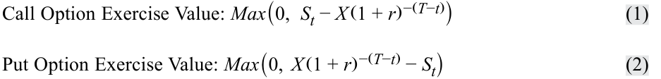
If we assume an exercise price, X , equal to the forward price, F0 ( T ), the exercise value of a call option is the same as the value of a long forward commitment at time t ( Vt ( T )). This forward commitment was shown earlier to equal St − PV( F0 ( T )), provided thatSt > PV( X ). That is, for a call option where F0 ( T ) = X : If St > PV( X ): St − PV( F 0( T )) = Max (0, St − PV( X ))
Nếu chúng ta giả định mức giá thực hiện, $X$, bằng với mức giá kỳ hạn, $F_0(T)$, thì giá trị thực hiện của một quyền chọn mua sẽ giống hệt như giá trị của một cam kết mua kỳ hạn (long forward commitment) tại thời điểm $t$ ($V_t(T)$). Cam kết kỳ hạn này đã được chứng minh trước đó là bằng $S_t - \text{PV}(F_0(T))$, với điều kiện là $S_t > \text{PV}(X)$. Nghĩa là, đối với một quyền chọn mua có $F_0(T) = X$: Nếu $S_t > \text{PV}(X)$: $S_t - \text{PV}(F_0(T)) = \text{Max}(0, S_t - \text{PV}(X))$.
Note that this comparison ignores the upfront call option premium paid by the option buyer ( c0 at time t = 0).
Lưu ý rằng phép so sánh này bỏ qua khoản phí quyền chọn mua trả trước (upfront call option premium) do người mua quyền chọn trả ($c_0$ tại thời điểm $t = 0$).
EXAMPLE 1
VÍ DỤ 1 (EXAMPLE 1)
Put Option Exercise Value
Giá trị Thực hiện của Quyền chọn Bán (Put Option Exercise Value)
Consider the case of a one-year put option with an exercise price ( X ) of EUR 1,000 and a risk-free rate of 1%. What is the exercise value of the option in six months if the spot price ( St ) equals EUR 950?
Hãy xem xét trường hợp của một quyền chọn bán kỳ hạn 1 năm có giá thực hiện ($X$) là 1.000 EUR và lãi suất phi rủi ro là 1%. Giá trị thực hiện của quyền chọn sau thời gian 6 tháng là bao nhiêu nếu giá giao ngay ($S_t$) bằng 950 EUR?
Use Equation 2 to solve for Max (0, PV( X ) − St ):
X( 1 + r)− (T−t) − St
Sử dụng Phương trình 2 để giải tìm $\text{Max}(0, \text{PV}(X) - S_t)$:
= EUR 45.04 (= EUR 1,000(1.01)-0.5 − EUR 950)
4
4
OPTION MONEYNESS
TRẠNG THÁI GIÁ TRỊ CỦA QUYỀN CHỌN (OPTION MONEYNESS)
explain the exercise value, moneyness, and time value of an option
giải thích giá trị thực hiện (exercise value), trạng thái giá trị (moneyness), và giá trị thời gian (time value) của một quyền chọn
An option’s exercise value at any time t was shown to be its current payoff. The relationship between the option’s total value and its exercise price expresses the option’s moneyness . Examples of in-the-money (ITM) options include a call option whose underlying spot price is above the exercise price ( X ) and a put option with an underlying spot price below the exercise price. When the underlying price is equal to the exercise price, the put or call option is said to be at the money (ATM). When the underlying price is below ( above ) the exercise price for a call ( put ) option, the option is less likely to be exercised and is said to be out of the money (OTM).
Giá trị thực hiện của một quyền chọn tại bất kỳ thời điểm $t$ nào đã được chỉ ra là kết quả thanh toán hiện tại (current payoff) của nó. Mối quan hệ giữa giá giao ngay của tài sản cơ sở và giá thực hiện của quyền chọn biểu thị trạng thái giá trị (moneyness) của quyền chọn. Các ví dụ về quyền chọn ở trạng thái có lời (in-the-money – ITM) bao gồm một quyền chọn mua có giá giao ngay của tài sản cơ sở cao hơn giá thực hiện ($X$) và một quyền chọn bán có giá giao ngay của tài sản cơ sở thấp hơn giá thực hiện. Khi giá tài sản cơ sở bằng với giá thực hiện, quyền chọn bán hoặc quyền chọn mua được gọi là ở trạng thái ngang giá (at the money – ATM). Khi giá tài sản cơ sở thấp hơn (cao hơn) giá thực hiện đối với một quyền chọn mua (bán), quyền chọn đó ít có khả năng được thực hiện hơn và được gọi là ở trạng thái lỗ (out of the money – OTM).
Also, the degree to which an option is in or out of the money affects the sensitivity of an option’s price to underlying price changes. For example, a so-called deep-in-the-money option , or one that is highly likely to be exercised, usually demonstrates a nearly one-to-one correspondence between option price and underlying price changes. A deep-out-of-the-money option , which is very unlikely to be exercised, demonstrates far less option price sensitivity for a given underlying price change. In contrast, relatively small price changes in the underlying for an at-the-money option often determine whether the option will be exercised. Moneyness is often used to compare options on the same underlying but with different exercise prices and/or times to maturity. Exhibit 1 shows the moneyness of a call option at maturity and summarizes these relationships.
Ngoài ra, mức độ (degree) mà một quyền chọn đang ở trạng thái có lời (ITM) hay lỗ (OTM) cũng ảnh hưởng đến độ nhạy (sensitivity) của giá quyền chọn trước những thay đổi của giá tài sản cơ sở. Ví dụ, cái gọi là quyền chọn có lời sâu (deep-in-the-money option), hay một quyền chọn có khả năng rất cao sẽ được thực hiện, thường thể hiện sự tương ứng gần như một-đổi-một (one-to-one correspondence) giữa biến động giá quyền chọn và biến động giá tài sản cơ sở. Một quyền chọn lỗ sâu (deep-out-of-the-money option), vốn rất ít có khả năng được thực hiện, thể hiện độ nhạy giá quyền chọn thấp hơn rất nhiều đối với một mức thay đổi giá tài sản cơ sở nhất định. Ngược lại, những thay đổi giá tương đối nhỏ của tài sản cơ sở đối với một quyền chọn ngang giá (at-the-money option) thường quyết định liệu quyền chọn đó có được thực hiện hay không. Trạng thái giá trị (moneyness) thường được sử dụng để so sánh các quyền chọn trên cùng một tài sản cơ sở nhưng có các mức giá thực hiện và/hoặc thời gian đến khi đáo hạn khác nhau. Bảng 1 (Exhibit 1) thể hiện trạng thái giá trị của một quyền chọn mua khi đáo hạn và tóm tắt các mối quan hệ này.
Exhibit 1: Call Option Moneyness at Maturity
Bảng 1: Trạng thái Giá trị của Quyền chọn Mua khi Đáo hạn (Exhibit 1: Call Option Moneyness at Maturity)
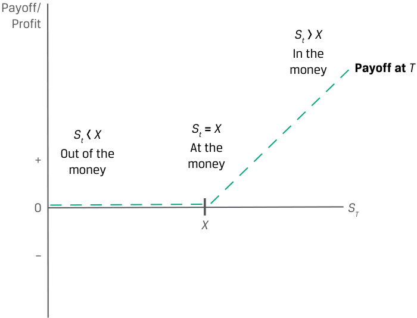
Chú thích hình ảnh: - Payoff/Profit: Kết quả thanh toán / Lợi nhuận; Payoff at $T$: Kết quả thanh toán tại thời điểm đáo hạn $T$. - Out of the money ($S_t < X$): Trạng thái lỗ (OTM). - At the money ($S_t = X$): Trạng thái ngang giá (ATM). - In the money ($S_t > X$): Trạng thái có lời (ITM).
| Moneyness | Call option (ct) | Put option (pt) |
|---|---|---|
| In the money (ITM) | St>X | St<X |
| At the money (ATM) | St=X | St=X |
| Out of the money (OTM) | St<X | St>X |
| Trạng thái giá trị (Moneyness) | Quyền chọn mua (Call option – $c_t$) | Quyền chọn bán (Put option – $p_t$) |
|---|---|---|
| Có lời (In the money – ITM) | $S_t > X$ | $S_t < X$ |
| Ngang giá (At the money – ATM) | $S_t = X$ | $S_t = X$ |
| Lỗ (Out of the money – OTM) | $S_t < X$ | $S_t > X$ |
EXAMPLE 2
VÍ DỤ 2 (EXAMPLE 2)
Put Option Moneyness
Trạng thái Giá trị của Quyền chọn Bán (Put Option Moneyness)
Recall in Example 1 that at time t , a put option with six months remaining to maturity had an exercise price ( X ) of EUR 1,000 and an underlying spot price ( St ) of EUR 950. Describe the moneyness of the put option at time t .
Hãy nhớ lại trong Ví dụ 1 rằng tại thời điểm $t$, một quyền chọn bán còn 6 tháng nữa là đáo hạn có giá thực hiện ($X$) là 1.000 EUR và giá giao ngay của tài sản cơ sở ($S_t$) là 950 EUR. Hãy mô tả trạng thái giá trị (moneyness) của quyền chọn bán tại thời điểm $t$.
Given that the underlying spot price is below the exercise price, the put option is in the money by EUR 50.
Vì giá giao ngay của tài sản cơ sở thấp hơn giá thực hiện, nên quyền chọn bán này đang ở trạng thái có lời (in the money) một khoản là 50 EUR.
OPTION TIME VALUE
GIÁ TRỊ THỜI GIAN CỦA QUYỀN CHỌN (OPTION TIME VALUE)
explain the exercise value, moneyness, and time value of an option
giải thích giá trị thực hiện (exercise value), trạng thái giá trị (moneyness), và giá trị thời gian (time value) của một quyền chọn
While the exercise value of an option reflects its current payoff, an additional component of an option’s value is derived from its remaining time to maturity. Although European options can be exercised only at maturity, they can be purchased or sold prior to maturity at a price ( ct or pt , for a call or put, respectively) that reflects the option’s future expected payoff. A longer time until expiration usually means a higher potential dispersion of the future underlying price for a given level of volatility.
Trong khi giá trị thực hiện của một quyền chọn phản ánh kết quả thanh toán hiện tại (current payoff) của nó, một thành phần bổ sung trong giá trị của quyền chọn được bắt nguồn từ thời gian còn lại cho đến khi đáo hạn. Mặc dù các quyền chọn kiểu châu Âu chỉ có thể được thực hiện khi đáo hạn, chúng có thể được mua hoặc bán trước khi đáo hạn tại một mức giá ($c_t$ hoặc $p_t$, tương ứng cho quyền chọn mua hoặc quyền chọn bán) phản ánh kết quả thanh toán dự kiến trong tương lai (future expected payoff) của quyền chọn. Thời gian còn lại cho đến khi đáo hạn càng dài thì thường đồng nghĩa với độ phân tán tiềm năng (potential dispersion) của giá tài sản cơ sở trong tương lai càng cao ứng với một mức độ biến động nhất định.
Similarly, an increase in volatility at a specific underlying price for a given time to expiration increases option value for the same reason. We will explore these factors further in a later lesson.
Tương tự như vậy, sự gia tăng độ biến động (volatility) tại một mức giá tài sản cơ sở cụ thể ứng với một khoảng thời gian đáo hạn nhất định sẽ làm tăng giá trị quyền chọn vì cùng một lý do đó. Chúng ta sẽ khám phá sâu hơn các nhân tố này trong một bài học sau.
The time value of an option is equal to the difference between the current option price and the option’s current payoff (or exercise value):
Giá trị thời gian (time value) của một quyền chọn bằng phần chênh lệch giữa giá quyền chọn hiện tại và kết quả thanh toán hiện tại (hay giá trị thực hiện) của quyền chọn đó:
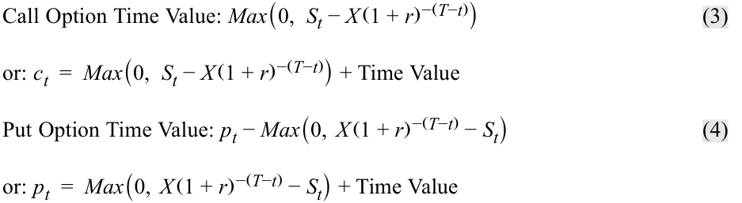
That is, the current option price is equal to the sum of its exercise value and time value. As Exhibit 2 shows, the time value of an option is always positive but declines to zero at maturity, a process referred to as time value decay .
Nghĩa là, giá quyền chọn hiện tại bằng tổng của giá trị thực hiện và giá trị thời gian của nó. Như Bảng 2 (Exhibit 2) cho thấy, giá trị thời gian của một quyền chọn luôn dương nhưng giảm dần về không khi đáo hạn, một quá trình được gọi là sự hao mòn giá trị thời gian (time value decay).
Exhibit 2: Exercise Value and Time Value of a Call Option
Bảng 2: Giá trị Thực hiện và Giá trị Thời gian của một Quyền chọn Mua (Exhibit 2: Exercise Value and Time Value of a Call Option)
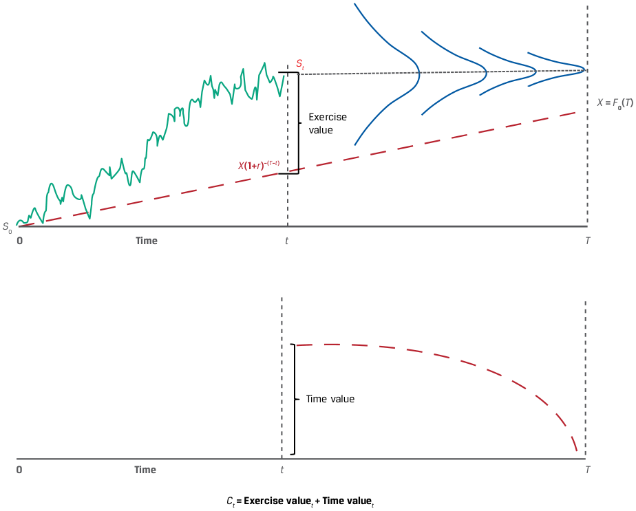
Chú thích hình ảnh: - Biểu đồ trên: Biểu diễn đường giá tài sản cơ sở $S_t$, đường giá trị hiện tại của giá thực hiện $X(1+r)^{-(T-t)}$ tiến dần tới $X = F_0(T)$ tại ngày đáo hạn $T$, và khoảng cách chênh lệch là Exercise value (Giá trị thực hiện). - Biểu đồ dưới: Biểu diễn Time value (Giá trị thời gian) giảm dần về $0$ tại thời điểm đáo hạn $T$ ($c_t = \text{Exercise value}_t + \text{Time value}_t$).
EXAMPLE 3
VÍ DỤ 3 (EXAMPLE 3)
Put Option Time Value
Giá trị Thời gian của Quyền chọn Bán (Put Option Time Value)
Example 1 showed that a one-year put option with an exercise price ( X ) of EUR 1,000 had an exercise value of EUR 45.04 with six months remaining to maturity when the spot price ( St ) was EUR 950. If we observe a current put option price ( pt ) of EUR 50, what is the time value of the put option?
Ví dụ 1 đã chỉ ra rằng một quyền chọn bán kỳ hạn 1 năm có giá thực hiện ($X$) là 1.000 EUR có giá trị thực hiện là 45,04 EUR khi còn 6 tháng nữa là đáo hạn vào lúc giá giao ngay ($S_t$) ở mức 950 EUR. Nếu chúng ta quan sát thấy mức giá quyền chọn bán hiện tại ($p_t$) là 50 EUR, thì giá trị thời gian của quyền chọn bán này là bao nhiêu?
Use Equation 4 to solve for pt − Max (0, PV( X ) − St ):
Sử dụng Phương trình 4 để giải tìm $p_t - \text{Max}(0, \text{PV}(X) - S_t)$:
pt − max (0, X( 1 + r)− (T−t) − St ) = EUR 4.96 (= EUR 50 − EUR 45.04)
BỘ CÂU HỎI (QUESTION SET)
Giá trị Quyền chọn so với Giá Giao ngay của Tài sản Cơ sở (Option Value relative to Underlying Spot Price)
- Mô tả những điểm tương đồng và khác biệt giữa giá trị thực hiện của một vị thế mua quyền chọn bán (long put option position) có giá thực hiện ($X$) bằng với giá kỳ hạn, $F_0(T)$, và kết quả thanh toán của một vị thế bán kỳ hạn (short forward position) khi đáo hạn có cùng các thông số tài sản cơ sở.
Lời giải:
QUESTION SET Option Value relative to Underlying Spot Price 1. Describe the similarities and differences between the exercise value of a long put option position with an exercise price ( X ) equal to the forward price, F0 ( T ), and a short forward position payoff at maturity with the same underlying details. Solution: The exercise value of a put option with an exercise price of X = F0 ( T ) at maturity (Max (0, X − ST )) is the same as the payoff of a short forward commitment at maturity ( F0 ( T ) − ST ) as long as the exercise price is greater than the underlying price. That is, for F0 ( T ) = X : If X > ST: F0 ( T ) − ST = Max (0, X − ST ) These payoff profiles will differ if ST > X , since the short forward payoff at maturity will require a payment from the seller to the buyer, while the put option owner will allow the option to expire unexercised. Note that this payoff comparison ignores the upfront option premium paid by the put option buyer ( p0 ) at time t = 0. 2. A European put option with three months remaining to maturity on an underlying stock with no additional cash flows has an exercise price ( X ) of GBP 50, a risk-free rate of 2%, and a current underlying price ( St ) of GBP 55. If the current put option price is GBP 5, calculate the exercise value and the time value and interpret the results. Solution: An option’s value comprises its exercise value plus its time value. The exercise value of a put option is Max (0, PV( X ) − St ) and can be calculated as follows: Put Option Exercise Value = Max (0, X( 1 + r)− (T−t) − St ) Max(0, GBP 50(1.02)-0.25 − GBP 55) = 0 The exercise value is zero, as the current underlying price exceeds the present value of the exercise price. The time value is the difference between the option price and the exercise value and represents the possibility that the likelihood and profitability of exercise at maturity may increase due to a favorable price change: Put Option Time Value = pt − Max (0, X( 1 + r)− (T−t) − St )
Giá trị thực hiện của một quyền chọn bán có giá thực hiện $X = F_0(T)$ khi đáo hạn ($\text{Max}(0, X - S_T)$) là giống hệt như kết quả thanh toán của một cam kết bán kỳ hạn khi đáo hạn ($F_0(T) - S_T$) miễn là giá thực hiện lớn hơn giá tài sản cơ sở. Nghĩa là, với $F_0(T) = X$: Nếu $X > S_T$: $F_0(T) - S_T = \text{Max}(0, X - S_T)$. Các hồ sơ kết quả thanh toán này sẽ khác nhau nếu $S_T > X$, bởi vì kết quả thanh toán của vị thế bán kỳ hạn khi đáo hạn sẽ đòi hỏi một khoản thanh toán từ người bán cho người mua, trong khi người sở hữu quyền chọn bán sẽ để quyền chọn hết hạn mà không thực hiện. Lưu ý rằng phép so sánh kết quả thanh toán này bỏ qua khoản phí quyền chọn trả trước do người mua quyền chọn bán trả ($p_0$) tại thời điểm $t = 0$.
- Một quyền chọn bán kiểu châu Âu (European put option) còn 3 tháng nữa là đáo hạn trên một cổ phiếu cơ sở không có dòng tiền bổ sung có giá thực hiện ($X$) là 50 GBP, lãi suất phi rủi ro là 2%, và giá tài sản cơ sở hiện tại ($S_t$) là 55 GBP. Nếu giá quyền chọn bán hiện tại là 5 GBP, hãy tính giá trị thực hiện và giá trị thời gian, đồng thời diễn giải kết quả.
Lời giải:
Giá trị của một quyền chọn bao gồm giá trị thực hiện cộng với giá trị thời gian của nó. Giá trị thực hiện của một quyền chọn bán là $\text{Max}(0, \text{PV}(X) - S_t)$ và có thể được tính như sau:
Giá trị thực hiện bằng không, vì giá tài sản cơ sở hiện tại vượt quá giá trị hiện tại của giá thực hiện. Giá trị thời gian là phần chênh lệch giữa giá quyền chọn và giá trị thực hiện, đại diện cho khả năng xác suất và mức sinh lời của việc thực hiện quyền khi đáo hạn có thể tăng lên nhờ một sự biến động giá thuận lợi:
- = GBP 5 (= GBP 5 − GBP 0)
The time value is always positive and declines to zero at maturity ( t = T ). Since the put option is out of the money, its value consists solely of time value.
Giá trị thời gian luôn dương và giảm dần về không khi đáo hạn ($t = T$). Vì quyền chọn bán đang ở trạng thái lỗ (out of the money), giá trị của nó chỉ bao gồm giá trị thời gian.
-
Match the following underlying price and exercise price relationships with their associated call option:
-
ST = 60, X = 50 A. An at-the-money call option 2. ST = 50, X = 50 B. An in-the-money call option 3. ST = 40, X = 50 C. An out-of-the-money call option
- Hãy ghép các mối quan hệ giữa giá tài sản cơ sở và giá thực hiện sau đây với quyền chọn mua (call option) tương ứng của chúng:
Solution:
| Mối quan hệ giữa $S_T$ và $X$ | Trạng thái của quyền chọn mua |
|---|---|
| 1. $S_T = 60, X = 50$ | A. Quyền chọn mua ngang giá (At-the-money call option) |
| 2. $S_T = 50, X = 50$ | B. Quyền chọn mua có lời (In-the-money call option) |
| 3. $S_T = 40, X = 50$ | C. Quyền chọn mua lỗ (Out-of-the-money call option) |
Lời giải:
Call options are in the money when ST > X , at the money when ST = X , and out of the money when ST < X . Therefore:
Quyền chọn mua ở trạng thái có lời (in the money) khi $S_T > X$, ngang giá (at the money) khi $S_T = X$, và lỗ (out of the money) khi $S_T < X$. Do đó:
1. B is correct. Since ST > X , this is an in-the-money call option.
1. B là đáp án đúng. Vì $S_T > X$, đây là một quyền chọn mua có lời (in-the-money call option).
2. A is correct. Since ST = X = 50, this is an at-the-money call option.
2. A là đáp án đúng. Vì $S_T = X = 50$, đây là một quyền chọn mua ngang giá (at-the-money call option).
3. C is correct. Since ST < X , this is an out-of-the-money call option.
3. C là đáp án đúng. Vì $S_T < X$, đây là một quyền chọn mua lỗ (out-of-the-money call option).
- Describe how the moneyness of an option affects how the option’s value will change for a given change in the price of the underlying.
- Solution:
- Mô tả cách thức trạng thái giá trị (moneyness) của một quyền chọn ảnh hưởng đến mức thay đổi giá trị của quyền chọn đó ứng với một mức thay đổi nhất định trong giá của tài sản cơ sở.
An increase in the moneyness of an option will increase the sensitivity of its value to changes in the underlying price. For example, an option that is very likely to be exercised will have a nearly one-to-one change in option value for a given change in the underlying price, while an option that is unlikely to be exercised will have a relatively small change in value for a given change in the underlying price.
Lời giải:
6
Sự gia tăng trong trạng thái giá trị (moneyness) của một quyền chọn sẽ làm tăng độ nhạy của giá trị quyền chọn đó trước những thay đổi trong giá tài sản cơ sở. Ví dụ, một quyền chọn có khả năng rất cao sẽ được thực hiện sẽ có mức thay đổi giá trị quyền chọn gần như theo tỷ lệ một-đổi-một ứng với một mức thay đổi nhất định trong giá tài sản cơ sở, trong khi một quyền chọn ít có khả năng được thực hiện sẽ có mức thay đổi giá trị tương đối nhỏ ứng với một mức thay đổi nhất định trong giá tài sản cơ sở.
6
ARBITRAGE
KINH DOANH CHÊNH LỆCH GIÁ (ARBITRAGE)
contrast the use of arbitrage and replication concepts in pricing forward commitments and contingent claims
đối chiếu việc sử dụng các khái niệm kinh doanh chênh lệch giá (arbitrage) và mô phỏng (replication) trong việc định giá các cam kết kỳ hạn (forward commitments) và các quyền đòi nợ có điều kiện (contingent claims)
An earlier lesson showed that riskless arbitrage opportunities arise if the “law of one price” does not hold—that is, an identical asset trades at different prices in different places at the same time. In the case of a derivative, we establish no-arbitrage conditions based on the payoff profile at maturity. As shown earlier, forward commitments with a symmetric payoff profile settle based on the difference between the forward price, F0 ( T ), at contract inception ( t = 0) and the underlying price, ST , at contract maturity ( t = T ), or ( ST − F0 ( T )) for a long forward position. For an underlying with no additional cash flows, it was shown that assets with a known future price must have a spot price equal to the future price discounted at the risk-free rate, r: S0 = ST (1 + r )-T . For purposes of this lesson, we ignore any costs or benefits of owning the underlying other than the opportunity cost (or the risk-free rate, r ).
Một bài học trước đã chỉ ra rằng các cơ hội kinh doanh chênh lệch giá phi rủi ro (riskless arbitrage opportunities) sẽ phát sinh nếu “quy luật một giá” (“law of one price”) không được duy trì—nghĩa là một tài sản giống hệt nhau được giao dịch tại các mức giá khác nhau ở các nơi khác nhau vào cùng một thời điểm. Trong trường hợp của một công cụ phái sinh, chúng ta thiết lập các điều kiện không kinh doanh chênh lệch giá (no-arbitrage conditions) dựa trên hồ sơ kết quả thanh toán khi đáo hạn. Như đã chỉ ra trước đó, các cam kết kỳ hạn với hồ sơ kết quả thanh toán đối xứng (symmetric payoff profile) được thanh toán dựa trên chênh lệch giữa giá kỳ hạn, $F_0(T)$, tại thời điểm khởi tạo hợp đồng ($t = 0$) và giá tài sản cơ sở, $S_T$, khi hợp đồng đáo hạn ($t = T$), hay $(S_T - F_0(T))$ đối với vị thế mua kỳ hạn. Đối với một tài sản cơ sở không có dòng tiền bổ sung, chúng ta đã chứng minh rằng các tài sản có mức giá tương lai đã biết phải có giá giao ngay bằng với giá tương lai được chiết khấu theo lãi suất phi rủi ro, $r$: $S_0 = S_T(1 + r)^{-T}$. Cho mục đích của bài học này, chúng ta bỏ qua mọi chi phí hoặc lợi ích của việc sở hữu tài sản cơ sở ngoài chi phí cơ hội (hay lãi suất phi rủi ro, $r$).
Contingent claims are characterized by asymmetric payoff profiles, introduced earlier. In the case of European options representing the right to purchase an underlying (or call option, c ) or the right to sell an underlying (or put option, p ) at a given exercise price ( X ) at maturity, the payoff profiles at maturity for an option buyer were shown to be:
Các quyền đòi nợ có điều kiện (contingent claims) có đặc trưng là hồ sơ kết quả thanh toán bất đối xứng (asymmetric payoff profiles), như đã giới thiệu trước đó. Trong trường hợp của các quyền chọn kiểu châu Âu đại diện cho quyền được mua một tài sản cơ sở (hay quyền chọn mua, $c$) hoặc quyền được bán một tài sản cơ sở (hay quyền chọn bán, $p$) tại một mức giá thực hiện nhất định ($X$) khi đáo hạn, hồ sơ kết quả thanh toán khi đáo hạn đối với người mua quyền chọn đã được chỉ ra là:
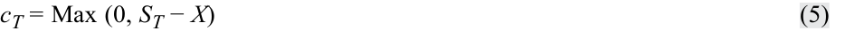
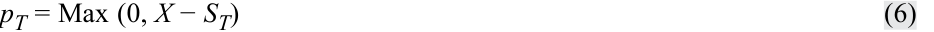
Exhibit 3: European Option Exercise at Expiration
Bảng 3: Thực hiện Quyền chọn Kiểu châu Âu khi Đáo hạn (Exhibit 3: European Option Exercise at Expiration)
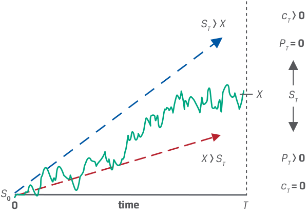
Chú thích hình ảnh: - Khi $S_T > X$: Quyền chọn mua được thực hiện ($c_T > 0$), quyền chọn bán không được thực hiện ($p_T = 0$). - Khi $X > S_T$: Quyền chọn bán được thực hiện ($p_T > 0$), quyền chọn mua không được thực hiện ($c_T = 0$).
Recall that, unlike forward commitments with an initial price of zero, the option buyer pays the seller a premium ( c0 for a call and p0 for a put at time t = 0), so the option buyer’s profit at maturity was introduced earlier as follows (ignoring the time value of money):
Hãy nhớ lại rằng, không giống như các cam kết kỳ hạn có mức giá ban đầu bằng không, người mua quyền chọn phải trả cho người bán một khoản phí quyền chọn ($c_0$ đối với quyền chọn mua và $p_0$ đối với quyền chọn bán tại thời điểm $t = 0$), vì vậy lợi nhuận (profit) của người mua quyền chọn khi đáo hạn đã được giới thiệu trước đó như sau (bỏ qua giá trị thời gian của tiền tệ):
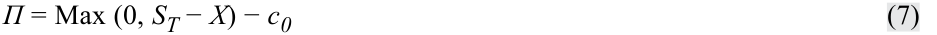
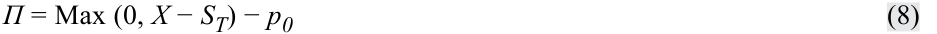
Equations 7 and 8 show the key distinction between forward commitments and contingent claims for purposes of arbitrage. The forward buyer enters into the contract with no cash paid upfront and has an unlimited gain or loss (bounded by zero for an underlying such as a stock that cannot have a negative price) at maturity as the underlying price rises or falls. The option buyer, in contrast, will exercise an option at maturity only if it is in the money. This conditional nature of option payoff profiles leads us to establish upper and lower no-arbitrage price bounds at any time t .
Phương trình 7 và 8 cho thấy điểm khác biệt then chốt giữa các cam kết kỳ hạn và các quyền đòi nợ có điều kiện xét theo mục đích kinh doanh chênh lệch giá. Người mua kỳ hạn tham gia vào hợp đồng mà không phải trả tiền mặt trả trước và có khoản lãi hoặc lỗ không giới hạn (được chặn dưới bởi số không đối với một tài sản cơ sở như cổ phiếu vốn không thể có giá âm) khi đáo hạn lúc giá tài sản cơ sở tăng hoặc giảm. Ngược lại, người mua quyền chọn sẽ chỉ thực hiện quyền chọn khi đáo hạn nếu nó ở trạng thái có lời (in the money). Bản chất có điều kiện (conditional nature) này của hồ sơ kết quả thanh toán quyền chọn dẫn chúng ta đến việc thiết lập các cận giá trên và cận giá dưới không có kinh doanh chênh lệch giá (upper and lower no-arbitrage price bounds) tại bất kỳ thời điểm $t$ nào.
A call option buyer will exercise only if the spot price ( ST ) exceeds the exercise price ( X ) at maturity. The lower bound of a call price is therefore the underlying’s price minus the present value of its exercise price or zero, whichever is greater. In other words, an option which trades below its exercise value violates the no-arbitrage condition. The call buyer will not pay more for the right to purchase an underlying than the price of that underlying, which is the upper bound:
Người mua quyền chọn mua sẽ chỉ thực hiện quyền nếu giá giao ngay ($S_T$) vượt quá giá thực hiện ($X$) khi đáo hạn. Do đó, cận dưới (lower bound) của giá quyền chọn mua là giá của tài sản cơ sở trừ đi giá trị hiện tại của giá thực hiện hoặc bằng không, tùy theo giá trị nào lớn hơn. Nói cách khác, một quyền chọn giao dịch dưới mức giá trị thực hiện của nó sẽ vi phạm điều kiện không kinh doanh chênh lệch giá. Người mua quyền chọn mua sẽ không trả nhiều tiền hơn cho quyền được mua một tài sản cơ sở so với chính mức giá của tài sản cơ sở đó, vốn là cận trên (upper bound):
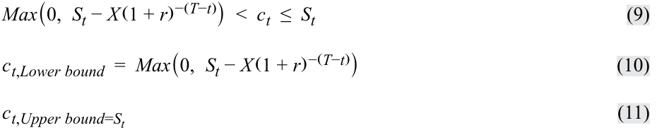
A put option buyer will exercise only if the spot price, ST , is below X at maturity. The exercise price, X , therefore represents the upper bound on the put value. The lower bound is the present value of the exercise price minus the spot price or zero, whichever is greater:
Người mua quyền chọn bán sẽ chỉ thực hiện quyền nếu giá giao ngay, $S_T$, thấp hơn $X$ khi đáo hạn. Do đó, giá thực hiện, $X$, đại diện cho cận trên (upper bound) đối với giá trị quyền chọn bán. Cận dưới (lower bound) là giá trị hiện tại của giá thực hiện trừ đi giá giao ngay hoặc bằng không, tùy theo giá trị nào lớn hơn:
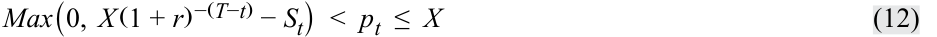
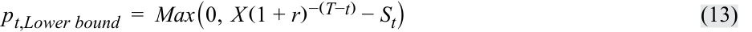
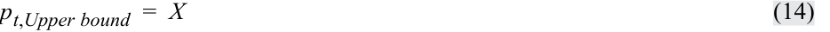
EXAMPLE 4
VÍ DỤ 4 (EXAMPLE 4)
Call Option Upper and Lower Bounds
Cận Trên và Cận Dưới của Quyền chọn Mua (Call Option Upper and Lower Bounds)
Consider a one-year call option with an exercise price, X , of EUR 1,000. The underlying asset, S0 , trades at EUR 990 at time t = 0 and the risk-free rate, r , is 1%. What are the no-arbitrage upper and lower bounds in six months’ time if the underlying asset price, St , equals EUR 1,050?
As the option buyer will exercise only if ST > X at t = T , the lower bound is equal to St − PV ( X ) or zero, whichever is greater:
Hãy xem xét một quyền chọn mua kỳ hạn 1 năm có giá thực hiện, $X$, là 1.000 EUR. Tài sản cơ sở, $S_0$, giao dịch ở mức 990 EUR tại thời điểm $t = 0$ và lãi suất phi rủi ro, $r$, là 1%. Cận trên và cận dưới không kinh doanh chênh lệch giá sau thời gian 6 tháng là bao nhiêu nếu giá tài sản cơ sở, $S_t$, bằng 1.050 EUR?
ct , Lower bound = Max (0, St − X( 1 + r)− (T−t) ) ct,Lower bound = Max(0, EUR 1,050 − EUR 1,000(1.01)-0.5 )
Vì người mua quyền chọn sẽ chỉ thực hiện quyền nếu $S_T > X$ tại thời điểm $t = T$, nên cận dưới bằng $S_t - \text{PV}(X)$ hoặc bằng không, tùy theo giá trị nào lớn hơn:
ct,Lower bound = Max(0, EUR 54.96)
The call buyer will not pay more than St for the right to purchase the underlying: ct , Upper bound = St ct, Upper bound = EUR 1,050
Người mua quyền chọn mua sẽ không trả nhiều hơn $S_t$ cho quyền được mua tài sản cơ sở:
7
7
REPLICATION
MÔ PHỎNG (REPLICATION)
contrast the use of arbitrage and replication concepts in pricing forward commitments and contingent claims
đối chiếu việc sử dụng các khái niệm kinh doanh chênh lệch giá (arbitrage) và mô phỏng (replication) trong việc định giá các cam kết kỳ hạn (forward commitments) và các quyền đòi nợ có điều kiện (contingent claims)
In an earlier lesson, we used replication to create forward commitment cash flows, utilizing a combination of long or short positions in an underlying asset and borrowing or lending cash. The ability of market participants to use replication strategies ensures that the law of one price holds and no riskless arbitrage profit opportunities exist.
Trong một bài học trước, chúng ta đã sử dụng phương pháp mô phỏng (replication) để tạo ra các dòng tiền của cam kết kỳ hạn, bằng cách tận dụng sự kết hợp giữa các vị thế mua hoặc bán trên một tài sản cơ sở cùng với việc đi vay hoặc cho vay tiền mặt. Khả năng sử dụng các chiến lược mô phỏng của những người tham gia thị trường đảm bảo rằng quy luật một giá được duy trì và không tồn tại cơ hội thu lợi nhuận kinh doanh chênh lệch giá phi rủi ro.
Recall from an earlier lesson that a call option is similar to a long forward position in that it increases in value as the underlying price rises but differs in that the call option settles only if there is a gain upon exercise. This apparent symmetry for positive outcomes is shown in Exhibit 4, where the exercise price, X , is equal to the forward price, F0 ( T ).
Hãy nhớ lại từ bài học trước rằng một quyền chọn mua tương tự như một vị thế mua kỳ hạn (long forward position) ở chỗ nó tăng giá trị khi giá tài sản cơ sở tăng lên nhưng khác biệt ở chỗ quyền chọn mua chỉ thanh toán nếu có khoản lãi khi thực hiện quyền. Sự đối xứng bề ngoài này đối với các kết quả dương được thể hiện trong Bảng 4 (Exhibit 4), nơi giá thực hiện, $X$, bằng với giá kỳ hạn, $F_0(T)$.
Exhibit 4: Call Option versus Long Forward Position
Bảng 4: Quyền chọn Mua so với Vị thế Mua Kỳ hạn (Exhibit 4: Call Option versus Long Forward Position)
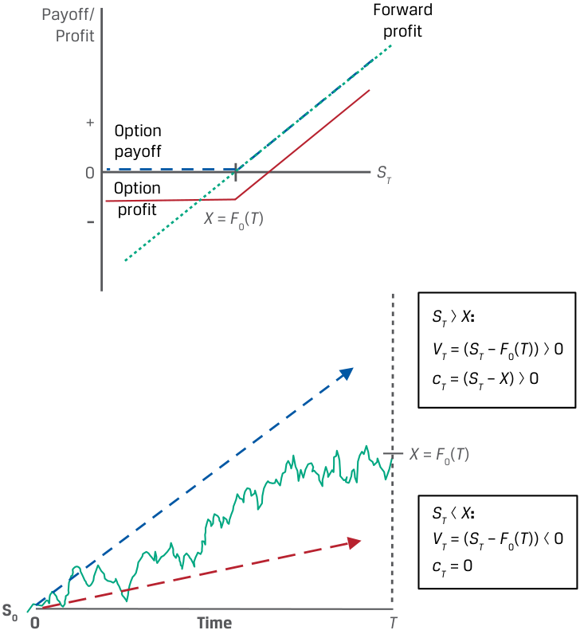
Chú thích hình ảnh: - Khi $S_T > X = F_0(T)$: Cả vị thế mua kỳ hạn và quyền chọn mua đều có kết quả thanh toán dương: $V_T = (S_T - F_0(T)) > 0$ và $c_T = (S_T - X) > 0$. - Khi $S_T < X = F_0(T)$: Vị thế mua kỳ hạn bị lỗ $V_T = (S_T - F_0(T)) < 0$, trong khi kết quả thanh toán của quyền chọn mua bằng không ($c_T = 0$).
In order to replicate the call option at contract inception ( t = 0), we also must borrow at the risk-free rate, r , and use the proceeds to purchase the underlying at a price of S0 . At option expiration ( t = T ), unlike in the case of the forward commitment, there are two possible replication outcomes:
Để mô phỏng quyền chọn mua tại thời điểm khởi tạo hợp đồng ($t = 0$), chúng ta cũng phải đi vay ở mức lãi suất phi rủi ro, $r$, và sử dụng số tiền thu được để mua tài sản cơ sở tại mức giá $S_0$. Khi quyền chọn đáo hạn ($t = T$), không giống như trong trường hợp của cam kết kỳ hạn, có hai kết quả mô phỏng có thể xảy ra:
-
Exercise ( ST > X ): Sell the underlying for ST and use the proceeds to repay X .
-
No exercise ( ST < X ): No settlement is required.
-
Thực hiện quyền (Exercise) ($S_T > X$): Bán tài sản cơ sở lấy $S_T$ và sử dụng số tiền thu được để hoàn trả khoản vay $X$.
-
Không thực hiện quyền (No exercise) ($S_T < X$): Không cần thực hiện thanh toán.
If exercise were certain, we would borrow X (1 + r )-T at inception, as in the case of the forward. However, since it is uncertain, we instead borrow a proportion of X (1 + r )-T based on the likelihood of exercise at time T , which is closely associated with the moneyness of an option. The non-linear payoff profile of an option requires that the replicating transaction be adjusted as this likelihood changes, while the replicating trades for a forward commitment remain constant. Option replication will be addressed in greater detail in later lessons.
Nếu việc thực hiện quyền là chắc chắn, chúng ta sẽ vay $X(1 + r)^{-T}$ tại thời điểm khởi tạo, giống như trong trường hợp của hợp đồng kỳ hạn. Tuy nhiên, vì việc này là không chắc chắn, thay vào đó chúng ta chỉ vay một tỷ lệ (proportion) của $X(1 + r)^{-T}$ dựa trên xác suất (likelihood) thực hiện quyền tại thời điểm $T$, vốn gắn liền mật thiết với trạng thái giá trị (moneyness) của quyền chọn. Hồ sơ kết quả thanh toán phi tuyến tính của một quyền chọn đòi hỏi giao dịch mô phỏng phải được điều chỉnh khi xác suất này thay đổi, trong khi các giao dịch mô phỏng cho một cam kết kỳ hạn vẫn giữ nguyên không đổi. Việc mô phỏng quyền chọn sẽ được đề cập chi tiết hơn trong các bài học sau.
We now turn our attention to put option replication. It was shown earlier that a short put position with an exercise price equal to the forward price ( X = F0 ( T )) mirrors the outcomes for a long forward position when the underlying price at maturity is below the forward price ( ST < X = F0 ( T )). The sold put decreases in value as the underlying price falls, but it settles only if there is a gain upon exercise. This relationship is shown in Exhibit 5, where the exercise price ( X ) is equal to the forward price, F0 ( T ).
Bây giờ chúng ta chuyển sự chú ý sang việc mô phỏng quyền chọn bán (put option replication). Trước đó chúng ta đã chỉ ra rằng một vị thế bán quyền chọn bán (short put position) có giá thực hiện bằng với giá kỳ hạn ($X = F_0(T)$) phản chiếu các kết quả của một vị thế mua kỳ hạn (long forward position) khi giá tài sản cơ sở lúc đáo hạn thấp hơn giá kỳ hạn ($S_T < X = F_0(T)$). Quyền chọn bán đã bán sẽ giảm giá trị (tức tăng khoản lỗ cho người bán quyền chọn bán, hoặc quyền chọn bán tăng giá trị đối với người mua quyền chọn bán) khi giá tài sản cơ sở giảm xuống, nhưng nó chỉ được thanh toán nếu có khoản lãi khi thực hiện quyền. Mối quan hệ này được thể hiện trong Bảng 5 (Exhibit 5), nơi giá thực hiện ($X$) bằng với giá kỳ hạn, $F_0(T)$.
Exhibit 5: Put Option versus Short Forward Position
Bảng 5: Quyền chọn Bán so với Vị thế Bán Kỳ hạn (Exhibit 5: Put Option versus Short Forward Position)
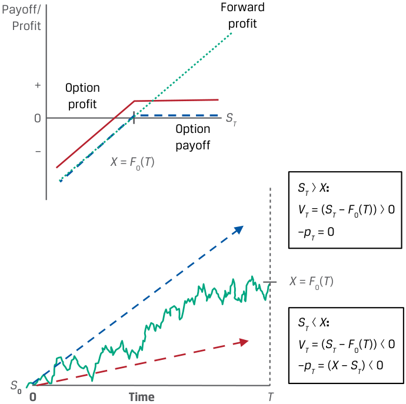
Chú thích hình ảnh: - Khi $S_T > X = F_0(T)$: Vị thế mua kỳ hạn có $V_T = (S_T - F_0(T)) > 0$, vị thế bán quyền chọn bán có $-p_T = 0$. - Khi $S_T < X = F_0(T)$: Vị thế mua kỳ hạn có $V_T = (S_T - F_0(T)) < 0$, vị thế bán quyền chọn bán có $-p_T = -(X - S_T) < 0$ (và người mua quyền chọn bán nhận $p_T = X - S_T > 0$).
In order to replicate the put option at contract inception ( t = 0), we must sell the underlying short at a price of S0 and lend the proceeds at the risk-free rate, r . At option expiration ( t = T ), unlike in the case of the forward commitment, there are two possible replication outcomes:
Để mô phỏng quyền chọn bán (vị thế mua quyền chọn bán) tại thời điểm khởi tạo hợp đồng ($t = 0$), chúng ta phải bán khống (sell short) tài sản cơ sở tại mức giá $S_0$ và đem số tiền thu được cho vay ở mức lãi suất phi rủi ro, $r$. Khi quyền chọn đáo hạn ($t = T$), không giống như trong trường hợp của cam kết kỳ hạn, có hai kết quả mô phỏng có thể xảy ra:
-
Exercise ( ST < X ): Purchase the underlying for ST from the proceeds of the risk-free loan.
-
No exercise ( ST > X ): No settlement is required.
-
Thực hiện quyền (Exercise) ($S_T < X$): Mua lại tài sản cơ sở với giá $S_T$ từ số tiền thu được của khoản cho vay phi rủi ro.
-
Không thực hiện quyền (No exercise) ($S_T > X$): Không cần thực hiện thanh toán.
If exercise were certain, we would lend X (1 + r )-T at inception, as in the case of the forward. However, as in the case of the call option, the asymmetric payoff profile requires adjustment over time based on the likelihood of exercise.
Nếu việc thực hiện quyền là chắc chắn, chúng ta sẽ cho vay $X(1 + r)^{-T}$ tại thời điểm khởi tạo, giống như trong trường hợp của hợp đồng kỳ hạn. Tuy nhiên, giống như trong trường hợp của quyền chọn mua, hồ sơ kết quả thanh toán bất đối xứng đòi hỏi phải có sự điều chỉnh theo thời gian dựa trên xác suất (likelihood) thực hiện quyền.
In the next lesson, we will turn our attention to the factors that drive the likelihood of option exercise prior to maturity.
Trong bài học tiếp theo, chúng ta sẽ chuyển sự chú ý sang các nhân tố thúc đẩy xác suất thực hiện quyền chọn trước khi đáo hạn.
QUESTION SET
BỘ CÂU HỎI (QUESTION SET)
Arbitrage and Replication
Kinh doanh Chênh lệch giá và Mô phỏng (Arbitrage and Replication)
- Determine the correct answers to complete the following sentence: The lower bound of a call price is the underlying’s price __ the present value of its ______ price or zero, whichever is greater.
- Xác định các câu trả lời đúng để hoàn thành câu sau đây: Cận dưới của giá quyền chọn mua là giá của tài sản cơ sở __ giá trị hiện tại của giá ______ của nó hoặc bằng không, tùy theo giá trị nào lớn hơn.
Solution:
Lời giải:
The lower bound of a call price is the underlying’s price minus the present value of its exercise price or zero, whichever is greater.
Cận dưới của giá quyền chọn mua là giá của tài sản cơ sở trừ đi (minus) giá trị hiện tại của giá thực hiện (exercise) của nó hoặc bằng không, tùy theo giá trị nào lớn hơn.
- A six-month European call option on an underlying stock with no additional cash flows has an exercise price ( X ) of GBP 50, an initial underlying price
- Một quyền chọn mua kiểu châu Âu kỳ hạn 6 tháng trên một cổ phiếu cơ sở không có dòng tiền bổ sung có giá thực hiện ($X$) là 50 GBP, giá tài sản cơ sở ban đầu
( S0 ) of GBP 49.75, and a risk-free rate of 2%. Calculate the lower bound of the call price in three months’ time if St = GBP 65. Solution: As the call option buyer will exercise only if ST > X at maturity, the lower bound is equal to St − PV ( X ) or zero in three months’ time, whichever is greater: ct , Lower bound = Max (0, St − X( 1 + r)− (T−t) ) Given St = GBP 65, X = GBP 50, r = 2%, and ( T − t ) = 0.25, we can solve for the call option’s lower bound as follows: ct , Lower bound = Max (0, GBP65 − GBP50( 1.02)− (0.25) ) = GBP 15.25
($S_0$) là 49,75 GBP, và lãi suất phi rủi ro là 2%. Hãy tính cận dưới của giá quyền chọn mua sau thời gian 3 tháng nếu $S_t = 65\text{ GBP}$.
- Match the following statements about replication strategies with their associated derivative instrument(s): 1. At time t = 0, borrow at the risk-free A. Both a call option and a put option rate and purchase the underlying at S0 . replication strategy 2. The strategy requires adjustment B. A call option replication strategy over time as the likelihood of exercise changes. 3. At time t = T , receive the loan repayC. A put option replication strategy if ment and purchase the underlying at ST . exercised
Lời giải:
Vì người mua quyền chọn mua sẽ chỉ thực hiện quyền nếu $S_T > X$ khi đáo hạn, nên cận dưới bằng $S_t - \text{PV}(X)$ hoặc bằng không sau thời gian 3 tháng, tùy theo giá trị nào lớn hơn:
Solution:
Với $S_t = 65\text{ GBP}$, $X = 50\text{ GBP}$, $r = 2\%$, và $(T - t) = 0,25$, chúng ta có thể giải tìm cận dưới của quyền chọn mua như sau:
1. B is correct. At time t = 0, a call option replication strategy involves borrowing at the risk-free rate and purchasing the underlying.
- Hãy ghép các phát biểu sau đây về chiến lược mô phỏng với (các) công cụ phái sinh tương ứng của chúng:
| Phát biểu về chiến lược mô phỏng | Công cụ phái sinh tương ứng |
|---|---|
| 1. Tại thời điểm $t = 0$, đi vay ở mức lãi suất phi rủi ro và mua tài sản cơ sở tại giá $S_0$. | A. Chiến lược mô phỏng cả quyền chọn mua và quyền chọn bán |
| 2. Chiến lược đòi hỏi phải có sự điều chỉnh theo thời gian khi xác suất thực hiện quyền thay đổi. | B. Chiến lược mô phỏng quyền chọn mua (call option replication strategy) |
| 3. Tại thời điểm $t = T$, nhận tiền hoàn trả khoản cho vay và mua tài sản cơ sở tại giá $S_T$. | C. Chiến lược mô phỏng quyền chọn bán (put option replication strategy) nếu được thực hiện |
2. A is correct. As both call and put options have a non-linear payoff profile, the replication strategy requires adjustment over time as the likelihood of exercise changes.
Lời giải:
3. C is correct. A put option replication strategy if exercised involves receiving the loan repayment and purchasing the underlying at ST at time t = T .
1. B là đáp án đúng. Tại thời điểm $t = 0$, chiến lược mô phỏng quyền chọn mua bao gồm việc đi vay ở mức lãi suất phi rủi ro và mua tài sản cơ sở.
2. A là đáp án đúng. Vì cả quyền chọn mua và quyền chọn bán đều có hồ sơ kết quả thanh toán phi tuyến tính, chiến lược mô phỏng đòi hỏi phải có sự điều chỉnh theo thời gian khi xác suất thực hiện quyền thay đổi.
- Explain the key difference between the changes in the replication of a contingent claim versus a forward commitment over the life of the contract.
3. C là đáp án đúng. Chiến lược mô phỏng quyền chọn bán nếu được thực hiện bao gồm việc nhận tiền hoàn trả khoản cho vay và mua tài sản cơ sở tại giá $S_T$ vào thời điểm $t = T$.
Solution:
- Giải thích điểm khác biệt then chốt giữa những thay đổi trong việc mô phỏng một quyền đòi nợ có điều kiện (contingent claim) so với một cam kết kỳ hạn (forward commitment) trong suốt vòng đời của hợp đồng.
Lời giải:
An option has an asymmetric payoff profile, since the option buyer will exercise only if the exercise value of the option is positive. Since the likelihood of option exercise changes over time, transactions replicating an option contract must be adjusted over time. A forward commitment has a symmetric payoff profile that will settle with certainty at a future date, and therefore the replicating transactions do not require adjustment over the contract life.
Một quyền chọn có hồ sơ kết quả thanh toán bất đối xứng (asymmetric), bởi vì người mua quyền chọn sẽ chỉ thực hiện quyền nếu giá trị thực hiện của quyền chọn mang số dương. Vì xác suất thực hiện quyền chọn thay đổi theo thời gian, các giao dịch mô phỏng một hợp đồng quyền chọn phải được điều chỉnh theo thời gian. Một cam kết kỳ hạn có hồ sơ kết quả thanh toán đối xứng (symmetric) chắc chắn sẽ được thanh toán vào một ngày trong tương lai, và do đó các giao dịch mô phỏng không đòi hỏi phải điều chỉnh trong suốt vòng đời của hợp đồng.
Volume 7: Derivatives
Learning Module 8 Pricing and Valuation of Options
Part 2/2: Factors Affecting Option Value (PDF Pages 194–204)
Tập 7: Công cụ Phái sinh (Derivatives)
Học phần 8: Định giá và Xác định giá trị của Quyền chọn (Pricing and Valuation of Options)
Phần 2/2: Các Nhân tố Ảnh hưởng đến Giá trị Quyền chọn (Trang PDF 194–204)
8
8
FACTORS AFFECTING OPTION VALUE
CÁC NHÂN TỐ ẢNH HƯỞNG ĐẾN GIÁ TRỊ QUYỀN CHỌN (FACTORS AFFECTING OPTION VALUE)
identify the factors that determine the value of an option and describe how each factor affects the value of an option
xác định các nhân tố quyết định giá trị của một quyền chọn và mô tả cách thức mỗi nhân tố ảnh hưởng đến giá trị của một quyền chọn
We now turn our attention to identifying and describing factors that affect an option’s value. Several of these factors are common to both forward commitments and options, and a number are unique to contingent claims. Factors that determine the value of an option include the value of the underlying, the exercise price, the time to maturity, the risk-free rate, the volatility of the underlying price, and any income or cost associated with owning the underlying asset.
Bây giờ chúng ta chuyển sự chú ý sang việc xác định và mô tả các nhân tố ảnh hưởng đến giá trị của một quyền chọn. Một số nhân tố trong số này là điểm chung của cả các cam kết kỳ hạn (forward commitments) và các quyền chọn (options), và một số nhân tố là nét đặc thù riêng của các quyền đòi nợ có điều kiện (contingent claims). Các nhân tố quyết định giá trị của một quyền chọn bao gồm giá trị của tài sản cơ sở (value of the underlying), giá thực hiện (exercise price), thời gian đến khi đáo hạn (time to maturity), lãi suất phi rủi ro (risk-free rate), độ biến động giá của tài sản cơ sở (volatility of the underlying price), và bất kỳ khoản thu nhập hoặc chi phí nào gắn liền với việc sở hữu tài sản cơ sở.
Value of the Underlying
Giá trị của Tài sản Cơ sở (Value of the Underlying)
Changes in the value of the underlying will have the same directional effect on the right to transact the underlying under an option contract as on the obligation to transact under a forward commitment. For example, a call option and a long forward position will both appreciate if the spot price of the underlying rises , while a put option and a short forward position will both appreciate if the spot price of the underlying falls , as shown in Exhibit 6.
Những thay đổi trong giá trị của tài sản cơ sở sẽ có tác động cùng chiều lên quyền giao dịch tài sản cơ sở theo hợp đồng quyền chọn giống như tác động lên nghĩa vụ giao dịch theo một cam kết kỳ hạn. Ví dụ, một quyền chọn mua (call option) và một vị thế mua kỳ hạn (long forward position) sẽ cùng tăng giá trị (appreciate) nếu giá giao ngay của tài sản cơ sở tăng lên, trong khi một quyền chọn bán (put option) và một vị thế bán kỳ hạn (short forward position) sẽ cùng tăng giá trị nếu giá giao ngay của tài sản cơ sở giảm xuống, như được minh họa trong Bảng 6 (Exhibit 6).
Exhibit 6: Call and Put Option Value versus Underlying Value
Bảng 6: Giá trị Quyền chọn Mua và Quyền chọn Bán so với Giá trị Tài sản Cơ sở (Exhibit 6: Call and Put Option Value versus Underlying Value)

Chú thích hình ảnh: - Đồ thị trên (Call option – Quyền chọn mua): Đường cong Option value ($t < T$) (Giá trị quyền chọn trước khi đáo hạn) nằm phía trên đường gấp khúc Payoff at $T$ (Kết quả thanh toán khi đáo hạn) và dốc lên khi $S_T$ tăng. - Đồ thị dưới (Put option – Quyền chọn bán): Đường cong Option value ($t < T$) và đường gấp khúc Payoff at $T$ dốc xuống khi $S_T$ tăng (tức tăng giá trị khi $S_T$ giảm).
A key distinction between forward commitments and contingent claims is the magnitude of a derivative’s price change for a given change in the underlying value. For a forward commitment, the derivative’s value is a linear (one-for-one) function of the underlying price, while for an option it is a non-linear relationship that depends on the likelihood that an option buyer will exercise in the future. The more likely it is that the option buyer will exercise (e.g., when the option is in the money), the more sensitive the option’s value to the underlying price. This likelihood depends on the relationship between the value of the underlying and the exercise price, a feature unique to option contracts that we turn to next.
Một điểm khác biệt quan trọng giữa các cam kết kỳ hạn và các quyền đòi nợ có điều kiện là độ lớn (magnitude) của mức thay đổi giá công cụ phái sinh ứng với một mức thay đổi nhất định trong giá trị tài sản cơ sở. Đối với một cam kết kỳ hạn, giá trị của công cụ phái sinh là một hàm tuyến tính (linear, một-đổi-một) theo giá tài sản cơ sở, trong khi đối với một quyền chọn, đó là một mối quan hệ phi tuyến tính (non-linear) phụ thuộc vào xác suất người mua quyền chọn sẽ thực hiện quyền trong tương lai. Khả năng người mua quyền chọn sẽ thực hiện quyền càng cao (ví dụ: khi quyền chọn đang ở trạng thái có lời – in the money), thì giá trị của quyền chọn càng nhạy cảm với giá tài sản cơ sở. Khả năng này phụ thuộc vào mối quan hệ giữa giá trị của tài sản cơ sở và giá thực hiện, một đặc điểm độc nhất của các hợp đồng quyền chọn mà chúng ta sẽ tìm hiểu tiếp theo.
Exercise Price
Giá Thực hiện (Exercise Price)
The exercise price is the threshold that determines whether an option buyer chooses to transact at contract maturity. For a call option representing the right to buy the underlying, the exercise price represents a lower bound on the option’s exercise value at maturity, leading to a higher option value for a lower exercise price. As call options settle based on Max (0, ST − X ) at expiry, a lower X will increase both the likelihood of exercise and the settlement value if exercised.
Giá thực hiện (exercise price) là ngưỡng quyết định liệu người mua quyền chọn có lựa chọn thực hiện giao dịch khi hợp đồng đáo hạn hay không. Đối với một quyền chọn mua đại diện cho quyền được mua tài sản cơ sở, giá thực hiện đại diện cho một cận dưới (lower bound) đối với giá trị thực hiện của quyền chọn khi đáo hạn, dẫn đến giá trị quyền chọn cao hơn khi giá thực hiện thấp hơn. Vì các quyền chọn mua được thanh toán dựa trên $\text{Max}(0, S_T - X)$ khi đáo hạn, một mức $X$ thấp hơn sẽ làm tăng cả xác suất thực hiện quyền lẫn giá trị thanh toán nếu được thực hiện.
The exercise price of a put option, in contrast, is an upper bound on its exercise value at maturity. A higher exercise price at which a put option buyer has the right to sell the underlying will therefore increase the value of the option. Exhibit 7 shows these differing effects of exercise price changes for both call and put options.
Ngược lại, giá thực hiện của một quyền chọn bán là một cận trên (upper bound) đối với giá trị thực hiện của nó khi đáo hạn. Do đó, một mức giá thực hiện cao hơn mà tại đó người mua quyền chọn bán có quyền bán tài sản cơ sở sẽ làm tăng giá trị của quyền chọn bán. Bảng 7 (Exhibit 7) thể hiện những tác động khác nhau này của sự thay đổi giá thực hiện đối với cả quyền chọn mua và quyền chọn bán.
Exhibit 7: Call and Put Option Value versus Exercise Price
Bảng 7: Giá trị Quyền chọn Mua và Quyền chọn Bán so với Giá Thực hiện (Exhibit 7: Call and Put Option Value versus Exercise Price)

Chú thích hình ảnh: - Đồ thị trên (Call option): Khi giá thực hiện giảm từ $X$ xuống $X^-$, đường kết quả thanh toán và giá trị quyền chọn mua dịch chuyển sang trái (tăng giá trị). - Đồ thị dưới (Put option): Khi giá thực hiện tăng từ $X$ lên $X^+$, đường kết quả thanh toán và giá trị quyền chọn bán dịch chuyển sang phải (tăng giá trị).
Time to Expiration
Thời gian đến khi Đáo hạn (Time to Expiration)
Recall from a prior lesson that the time value, or difference between an option’s price and its exercise value, represents the likelihood that favorable changes to the underlying price will increase the profitability of exercise. Unlike a long forward position where the buyer is equally likely to experience an increase or a decrease in the underlying price over a longer period, the one-sided (or asymmetric) payoff profile of an option allows the buyer to ignore any outcomes where the option will expire unexercised.
Hãy nhớ lại từ bài học trước rằng giá trị thời gian (time value), hay phần chênh lệch giữa giá của một quyền chọn và giá trị thực hiện của nó, đại diện cho khả năng những thay đổi thuận lợi trong giá tài sản cơ sở sẽ làm tăng mức sinh lời của việc thực hiện quyền. Không giống như một vị thế mua kỳ hạn (long forward position) nơi người mua có khả năng ngang nhau trong việc trải qua sự tăng giá hoặc giảm giá của tài sản cơ sở trong một khoảng thời gian dài hơn, hồ sơ kết quả thanh toán một phía (hay bất đối xứng – one-sided or asymmetric payoff profile) của quyền chọn cho phép người mua bỏ qua bất kỳ kết quả nào mà tại đó quyền chọn hết hạn mà không được thực hiện.
For a call option, a longer time to expiration will increase the option’s value in all cases. The price appreciation potential of an underlying is essentially unlimited and increases over longer periods, while the downside is limited to the loss of the premium.
Đối với một quyền chọn mua, thời gian đến khi đáo hạn dài hơn sẽ làm tăng giá trị của quyền chọn trong tất cả các trường hợp. Tiềm năng tăng giá của một tài sản cơ sở về cơ bản là không giới hạn và tăng lên qua các khoảng thời gian dài hơn, trong khi rủi ro giảm giá phía dưới được giới hạn ở mức tổn thất khoản phí quyền chọn.
A put option representing the right to sell the underlying also usually benefits from the passage of time. In the case of a put option, a longer time to expiration offers greater potential for price depreciation below the exercise price, while the loss is limited to the premium if the underlying price rises. However, as put option buyers await the sale of the underlying in order to receive ( X − ST ) upon exercise, a longer time to expiry reduces the present value of the payoff. While less common, in some cases a longer time to expiration will lower a put’s value, especially for deep-in-the-money puts with a longer time to expiration and a higher risk-free rate of interest.
Một quyền chọn bán đại diện cho quyền được bán tài sản cơ sở cũng thường được hưởng lợi từ sự trôi qua của thời gian (khi thời gian đáo hạn dài hơn). Trong trường hợp của quyền chọn bán, thời gian đến khi đáo hạn dài hơn mang lại tiềm năng giảm giá (price depreciation) lớn hơn xuống dưới mức giá thực hiện, trong khi khoản lỗ được giới hạn ở mức phí quyền chọn nếu giá tài sản cơ sở tăng lên. Tuy nhiên, vì người mua quyền chọn bán phải chờ đợi việc bán tài sản cơ sở để nhận được $(X - S_T)$ khi thực hiện quyền, thời gian đến khi đáo hạn dài hơn sẽ làm giảm giá trị hiện tại của khoản thanh toán nhận được. Mặc dù ít phổ biến hơn, trong một số trường hợp, thời gian đến khi đáo hạn dài hơn sẽ làm giảm giá trị của một quyền chọn bán, đặc biệt là đối với các quyền chọn bán có lời sâu (deep-in-the-money puts) có thời gian đến khi đáo hạn dài hơn và mức lãi suất phi rủi ro cao hơn.
Risk-Free Interest Rate
Lãi suất Phi Rủi ro (Risk-Free Interest Rate)
An earlier lesson showed the risk-free rate to be the opportunity cost of holding an asset, which extends to the no-arbitrage valuation of derivatives. For example, an option’s exercise value was shown to be equal to the difference between the spot price and the present value of the exercise price:
Một bài học trước đã chỉ ra rằng lãi suất phi rủi ro là chi phí cơ hội của việc nắm giữ một tài sản, điều này cũng được mở rộng sang việc định giá không kinh doanh chênh lệch giá đối với các công cụ phái sinh. Ví dụ, giá trị thực hiện của một quyền chọn đã được chứng minh là bằng phần chênh lệch giữa giá giao ngay và giá trị hiện tại (present value) của giá thực hiện:
Call Option Exercise Value: Max (0, ( St − PV( X )))
Put Option Exercise Value: Max (0, (PV( X ) − St ))
A higher risk-free rate therefore lowers the present value of the exercise price provided an option is in the money. A higher risk-free rate will increase the exercise value of a call option and decrease the exercise value of a put option. Note that the risk-free rate does not directly affect the time value of an option.
Do đó, một mức lãi suất phi rủi ro cao hơn sẽ làm giảm giá trị hiện tại của giá thực hiện với điều kiện quyền chọn đang ở trạng thái có lời (in the money). Một mức lãi suất phi rủi ro cao hơn sẽ làm tăng giá trị thực hiện của một quyền chọn mua và làm giảm giá trị thực hiện của một quyền chọn bán. Lưu ý rằng lãi suất phi rủi ro không ảnh hưởng trực tiếp đến giá trị thời gian của một quyền chọn.
Volatility of the Underlying
Độ biến động của Tài sản Cơ sở (Volatility of the Underlying)
Volatility is a measure of the expected dispersion of an underlying asset’s future price movements. Higher price volatility of the underlying increases the likelihood of a higher positive exercise value without affecting the downside case in which the option expires unexercised, as shown in Exhibit 8. Note that this effect will be the same for both call options and put options.
Độ biến động (volatility) là một thước đo về mức độ phân tán dự kiến (expected dispersion) của các biến động giá trong tương lai của một tài sản cơ sở. Độ biến động giá của tài sản cơ sở càng cao sẽ làm tăng khả năng đạt được một giá trị thực hiện dương cao hơn mà không làm ảnh hưởng đến trường hợp bất lợi phía dưới khi quyền chọn hết hạn mà không được thực hiện, như được minh họa trong Bảng 8 (Exhibit 8). Lưu ý rằng tác động này sẽ giống nhau đối với cả quyền chọn mua và quyền chọn bán.
For example, as volatility rises , a wider range of possible underlying prices increases an option’s time value and the likelihood that it will end up in the money. Lower volatility will reduce the time value of both put and call options.
Ví dụ, khi độ biến động tăng lên, phạm vi rộng hơn của các mức giá tài sản cơ sở có thể xảy ra sẽ làm tăng giá trị thời gian của quyền chọn cũng như khả năng quyền chọn sẽ kết thúc ở trạng thái có lời (in the money). Độ biến động thấp hơn sẽ làm giảm giá trị thời gian của cả quyền chọn bán và quyền chọn mua.
Exhibit 8: Volatility and Option Value
Bảng 8: Độ biến động và Giá trị Quyền chọn (Exhibit 8: Volatility and Option Value)

Chú thích hình ảnh: - Khi độ biến động (volatility) tăng lên, biên độ phân tán của giá tài sản cơ sở $S_T$ quanh giá thực hiện $X$ tại thời điểm đáo hạn $T$ mở rộng ra, làm tăng tiềm năng sinh lời khi quyền chọn ở trạng thái ITM trong khi mức lỗ tối đa khi OTM vẫn được giới hạn.
Income or Cost Related to Owning Underlying Asset
Thu nhập hoặc Chi phí Liên quan đến Việc Sở hữu Tài sản Cơ sở (Income or Cost Related to Owning Underlying Asset)
In a prior lesson, the benefits and costs of owning an underlying asset over time were shown to affect the relationship of spot versus forward prices. For example, income or other, non-cash benefits (such as convenience yield) accrue to the owner of an underlying asset but not to the owner of a derivative. This effect holds for both forward commitments and contingent claims. Income or other benefits of ownership decrease the value of a call and increase the value of a put. Carry costs (such as storage and insurance for commodities) have the opposite effect, increasing the value of a call option and decreasing the value of a put. A summary of the factors that affect an option’s value is provided in Exhibit 9, with the sign on the option value referring to the impact (positive or negative) of an increase in the factor.
Trong một bài học trước, những lợi ích và chi phí của việc sở hữu một tài sản cơ sở theo thời gian đã được chứng minh là có ảnh hưởng đến mối quan hệ giữa giá giao ngay và giá kỳ hạn. Ví dụ, thu nhập hoặc các lợi ích phi tiền mặt khác (chẳng hạn như lợi suất thuận tiện – convenience yield) thuộc về người sở hữu tài sản cơ sở nhưng không thuộc về người sở hữu công cụ phái sinh. Tác động này đúng với cả các cam kết kỳ hạn và các quyền đòi nợ có điều kiện. Thu nhập hoặc các lợi ích khác của quyền sở hữu sẽ làm giảm giá trị của một quyền chọn mua và làm tăng giá trị của một quyền chọn bán. Chi phí lưu giữ (carry costs, chẳng hạn như chi phí lưu kho và bảo hiểm đối với hàng hóa) có tác động ngược lại, làm tăng giá trị của một quyền chọn mua và làm giảm giá trị của một quyền chọn bán. Bảng tóm tắt các nhân tố ảnh hưởng đến giá trị của một quyền chọn được cung cấp trong Bảng 9 (Exhibit 9), với dấu trên giá trị quyền chọn đề cập đến tác động (cùng chiều dương hay ngược chiều âm) của sự gia tăng trong nhân tố đó.
Exhibit 9: Factors That Affect the Value of an Option
Bảng 9: Các Nhân tố Ảnh hưởng đến Giá trị của một Quyền chọn (Exhibit 9: Factors That Affect the Value of an Option)
| Factor | Call Value | Put Value |
|---|---|---|
| Value of the underlying | + | − |
| Exercise price | − | + |
| Time to expiration | + | +/− |
| Risk-free interest rate | + | − |
| Volatility of the underlying | + | + |
| Income/cost related to owning the underlying | −/+ | +/− |
| Nhân tố (Factor) (khi tăng lên) | Giá trị Quyền chọn Mua (Call Value) | Giá trị Quyền chọn Bán (Put Value) |
|---|---|---|
| Giá trị của tài sản cơ sở (Value of the underlying) | + | − |
| Giá thực hiện (Exercise price) | − | + |
| Thời gian đến khi đáo hạn (Time to expiration) | + | +/− |
| Lãi suất phi rủi ro (Risk-free interest rate) | + | − |
| Độ biến động của tài sản cơ sở (Volatility of the underlying) | + | + |
| Thu nhập/chi phí liên quan đến việc sở hữu tài sản cơ sở (Income/cost related to owning the underlying) | −/+ | +/− |
QUESTION SET
BỘ CÂU HỎI (QUESTION SET)
Factors That Affect Option Value
Các Nhân tố Ảnh hưởng đến Giá trị Quyền chọn (Factors That Affect Option Value)
- Determine the correct answers to complete the following sentence: For a call option representing the right to buy the underlying, the exercise price represents a __ bound on an option’s exercise value at maturity, leading to a ____ option value for a lower exercise price.
- Xác định các câu trả lời đúng để hoàn thành câu sau đây: Đối với một quyền chọn mua đại diện cho quyền được mua tài sản cơ sở, giá thực hiện đại diện cho một cận __ đối với giá trị thực hiện của quyền chọn khi đáo hạn, dẫn đến giá trị quyền chọn ____ ứng với một mức giá thực hiện thấp hơn.
Solution:
Lời giải:
For a call option representing the right to buy the underlying, the exercise price represents a lower bound on an option’s exercise value at maturity, leading to a higher option value for a lower exercise price.
Đối với một quyền chọn mua đại diện cho quyền được mua tài sản cơ sở, giá thực hiện đại diện cho một cận dưới (lower) đối với giá trị thực hiện của quyền chọn khi đáo hạn, dẫn đến giá trị quyền chọn cao hơn (higher) ứng với một mức giá thực hiện thấp hơn.
-
Match the following changes in factors affecting option value (holding other factors constant) with their corresponding option value change:
-
A lower exercise price ( X ) A. Increases the value of both a call option and a put option
-
A lower underlying price ( ST ) B. Increases the value of a call option
-
A rise in the volatility of the underlying C. Increases the value of a put option price
- Hãy ghép những thay đổi sau đây trong các nhân tố ảnh hưởng đến giá trị quyền chọn (giữ các nhân tố khác không đổi) với sự thay đổi giá trị quyền chọn tương ứng của chúng:
Solution:
| Thay đổi trong nhân tố | Thay đổi giá trị quyền chọn |
|---|---|
| 1. Giá thực hiện ($X$) thấp hơn | A. Làm tăng giá trị của cả quyền chọn mua và quyền chọn bán |
| 2. Giá tài sản cơ sở ($S_T$) thấp hơn | B. Làm tăng giá trị của quyền chọn mua |
| 3. Sự gia tăng trong độ biến động của giá tài sản cơ sở | C. Làm tăng giá trị của quyền chọn bán |
Lời giải:
1. B is correct. A lower exercise price increases the value of a call option, since for a given underlying price at maturity of ST , the call option settlement value of Max (0, ST − X ) will increase for a lower X .
1. B là đáp án đúng. Giá thực hiện thấp hơn làm tăng giá trị của quyền chọn mua, bởi vì ứng với một mức giá tài sản cơ sở nhất định khi đáo hạn là $S_T$, giá trị thanh toán của quyền chọn mua là $\text{Max}(0, S_T - X)$ sẽ tăng lên khi $X$ thấp hơn.
2. C is correct. A lower underlying price ( ST ) will increase the value of a put option. Since a put option is the right to sell an underlying at the exercise price ( X ), the put option settlement value of Max (0, X − ST ) will increase as ST declines.
2. C là đáp án đúng. Giá tài sản cơ sở ($S_T$) thấp hơn sẽ làm tăng giá trị của quyền chọn bán. Vì quyền chọn bán là quyền được bán một tài sản cơ sở tại mức giá thực hiện ($X$), giá trị thanh toán của quyền chọn bán là $\text{Max}(0, X - S_T)$ sẽ tăng lên khi $S_T$ giảm xuống.
3. A is correct. A rise in the volatility of the underlying price will increase the value of both a call option and a put option. Greater price variability of the underlying will increase the probability of a higher positive exercise value for a call or a put option without affecting the downside case where the option expires unexercised.
3. A là đáp án đúng. Sự gia tăng trong độ biến động của giá tài sản cơ sở sẽ làm tăng giá trị của cả quyền chọn mua và quyền chọn bán. Biến thiên giá lớn hơn của tài sản cơ sở sẽ làm tăng xác suất đạt được một giá trị thực hiện dương cao hơn đối với quyền chọn mua hoặc quyền chọn bán mà không làm ảnh hưởng đến trường hợp bất lợi phía dưới nơi quyền chọn hết hạn mà không được thực hiện.
- Determine the correct answers to complete the following sentences: A key distinction between forward commitments and contingent claims is the _ of a derivative’s price change for a given change in the underlying value. For a forward commitment, the derivative value is a function of the underlying price, while for an option it is a ____ relationship.
- Xác định các câu trả lời đúng để hoàn thành các câu sau đây: Một điểm khác biệt quan trọng giữa các cam kết kỳ hạn và các quyền đòi nợ có điều kiện là _ của mức thay đổi giá công cụ phái sinh ứng với một mức thay đổi nhất định trong giá trị tài sản cơ sở. Đối với một cam kết kỳ hạn, giá trị công cụ phái sinh là một hàm theo giá tài sản cơ sở, trong khi đối với một quyền chọn thì đó là một mối quan hệ ____.
Solution:
Lời giải:
A key distinction between forward commitments and contingent claims is the magnitude of a derivative’s price change for a given change in the underlying value. For a forward commitment, the derivative value is a linear function of the underlying price, while for an option it is a non-linear relationship.
Một điểm khác biệt quan trọng giữa các cam kết kỳ hạn và các quyền đòi nợ có điều kiện là độ lớn (magnitude) của mức thay đổi giá công cụ phái sinh ứng với một mức thay đổi nhất định trong giá trị tài sản cơ sở. Đối với một cam kết kỳ hạn, giá trị công cụ phái sinh là một hàm tuyến tính (linear) theo giá tài sản cơ sở, trong khi đối với một quyền chọn thì đó là một mối quan hệ phi tuyến tính (non-linear).
- Explain the effect of a decrease in the risk-free rate of interest on the value of put and call options and justify your answer.
-
Solution:
-
A decrease in the risk-free rate increases the present value of an option’s exercise price (PV( X )). The exercise value for an in-the-money call option will fall, since ( St − PV( X )) is lower for a higher PV( X ), while the exercise value for an in-the-money put option will rise, since (PV( X ) − St ) rises for a higher PV( X ). Note that the time value of an option is not directly affected by the risk-free rate.
- Giải thích tác động của sự sụt giảm trong lãi suất phi rủi ro lên giá trị của quyền chọn bán và quyền chọn mua, đồng thời giải thích lý do cho câu trả lời của bạn.
Lời giải:
- Sự sụt giảm trong lãi suất phi rủi ro làm tăng giá trị hiện tại của giá thực hiện quyền chọn ($\text{PV}(X)$). Giá trị thực hiện của một quyền chọn mua đang có lời (in-the-money call) sẽ giảm xuống, bởi vì $(S_t - \text{PV}(X))$ thấp hơn khi $\text{PV}(X)$ cao hơn, trong khi giá trị thực hiện của một quyền chọn bán đang có lời (in-the-money put) sẽ tăng lên, bởi vì $(\text{PV}(X) - S_t)$ tăng lên khi $\text{PV}(X)$ cao hơn. Lưu ý rằng giá trị thời gian của một quyền chọn không bị ảnh hưởng trực tiếp bởi lãi suất phi rủi ro.
~~PRACTICE PROBLEMS~~
BÀI TẬP THỰC HÀNH (PRACTICE PROBLEMS)
The following information relates to questions 1-9
Thông tin sau đây liên quan đến các câu hỏi từ 1 đến 9
The Viswan Family Office (VFO) owns non-dividend-paying shares of Biomian Limited that are currently priced ( S0 ) at INR 295 per share. VFO’s CIO is considering an offer to sell shares at a forward price ( F0 ( T )) of INR 300.84 per share in six months based on a risk-free rate of 4%. You have been asked to advise on the purchase of a put option or the sale of a call option with an exercise price ( X ) equal to the forward price ( F0 ( T )) as alternatives to a forward share sale.
Văn phòng Quản lý Gia sản Viswan (Viswan Family Office – VFO) sở hữu cổ phiếu không trả cổ tức của Biomian Limited hiện đang có giá ($S_0$) là 295 INR mỗi cổ phiếu. Giám đốc Đầu tư (CIO) của VFO đang cân nhắc một lời đề nghị bán cổ phiếu tại mức giá kỳ hạn ($F_0(T)$) là 300,84 INR mỗi cổ phiếu sau thời gian 6 tháng dựa trên mức lãi suất phi rủi ro là 4%. Bạn được yêu cầu tư vấn về việc mua một quyền chọn bán (purchase of a put option) hoặc bán một quyền chọn mua (sale of a call option) có giá thực hiện ($X$) bằng với giá kỳ hạn ($F_0(T)$) như những phương án thay thế cho việc bán cổ phiếu kỳ hạn.
1. Which of the following statements correctly describes the put option and call option premiums given the relationship between Biomian’s current price of INR 295 and the exercise price equal to the forward price of INR 300.84?
1. Phát biểu nào sau đây mô tả đúng về phí quyền chọn bán và phí quyền chọn mua dựa trên mối quan hệ giữa mức giá hiện tại 295 INR của Biomian và mức giá thực hiện bằng với giá kỳ hạn 300,84 INR?
-
A. The call option’s premium consists solely of time value, and the put option’s premium consists solely of exercise value.
-
B. The call option’s premium consists solely of exercise value, and the put option’s premium consists solely of time value.
-
C. The call option’s premium consists solely of time value, and the put option’s premium consists solely of time value.
-
A. Phí quyền chọn mua chỉ bao gồm giá trị thời gian, và phí quyền chọn bán chỉ bao gồm giá trị thực hiện.
-
B. Phí quyền chọn mua chỉ bao gồm giá trị thực hiện, và phí quyền chọn bán chỉ bao gồm giá trị thời gian.
-
C. Phí quyền chọn mua chỉ bao gồm giá trị thời gian, và phí quyền chọn bán cũng chỉ bao gồm giá trị thời gian.
2. Which of the following statements correctly describes an important distinction between the two strategies of buying a put option and selling a call option with respect to option time value decay?
2. Phát biểu nào sau đây mô tả đúng một điểm khác biệt quan trọng giữa hai chiến lược mua quyền chọn bán và bán quyền chọn mua xét về mặt sự hao mòn giá trị thời gian (time value decay) của quyền chọn?
-
A. Time value decay is a benefit to both option strategies.
-
B. Time value decay is a cost to both option strategies.
-
C. Time value decay is a benefit to selling a call option and a cost to buying a put option.
-
A. Sự hao mòn giá trị thời gian là một lợi ích đối với cả hai chiến lược quyền chọn.
-
B. Sự hao mòn giá trị thời gian là một chi phí đối với cả hai chiến lược quyền chọn.
-
C. Sự hao mòn giá trị thời gian là một lợi ích đối với việc bán quyền chọn mua và là một chi phí đối với việc mua quyền chọn bán.
3. VFO is considering the purchase of the put option to hedge against a decline in Biomian’s share price. Which of the following statements best characterizes the trade-off between the put and the forward based on no-arbitrage pricing?
3. VFO đang cân nhắc việc mua quyền chọn bán để phòng ngừa rủi ro (hedge) trước sự sụt giảm giá cổ phiếu của Biomian. Phát biểu nào sau đây mô tả đúng nhất sự đánh đổi (trade-off) giữa quyền chọn bán và hợp đồng kỳ hạn dựa trên nguyên tắc định giá không kinh doanh chênh lệch giá?
-
A. The gain on the forward sale will equal the purchased put option’s profit at maturity provided the put option ends up in the money at maturity.
-
B. The loss on the forward sale will exceed the loss on the purchased put at maturity if Biomian’s share price exceeds the forward price by more than the initial put premium paid.
-
C. We do not have enough information to answer this question, since we do not know the time value of the option at maturity.
-
A. Khoản lãi từ việc bán kỳ hạn sẽ bằng với lợi nhuận của quyền chọn bán đã mua khi đáo hạn với điều kiện quyền chọn bán kết thúc ở trạng thái có lời (in the money) khi đáo hạn.
-
B. Khoản lỗ từ việc bán kỳ hạn sẽ vượt quá khoản lỗ của quyền chọn bán đã mua khi đáo hạn nếu giá cổ phiếu của Biomian vượt quá giá kỳ hạn một mức lớn hơn khoản phí quyền chọn bán ban đầu đã trả.
-
C. Chúng ta không có đủ thông tin để trả lời câu hỏi này, bởi vì chúng ta không biết giá trị thời gian của quyền chọn khi đáo hạn.
4. In evaluating the purchased put strategy (with X = F0 ( T )), the CIO has asked you to consider selling the put in three months’ time if its price appreciates over that period. Which of the following best characterizes the no-arbitrage put price at
4. Khi đánh giá chiến lược mua quyền chọn bán (với $X = F_0(T)$), CIO đã yêu cầu bạn cân nhắc việc bán lại quyền chọn bán đó sau thời gian 3 tháng nếu giá của nó tăng lên trong khoảng thời gian đó. Phương án nào sau đây mô tả đúng nhất mức giá quyền chọn bán không kinh doanh chênh lệch giá tại
that time?
thời điểm đó?
-
A. As VFO will exercise only if the spot price is below the exercise price, the lower bound of the put price is the greater of zero and the present value of the spot price minus the exercise price.
-
B. As VFO will exercise only if the spot price is below the exercise price, the upper bound of the put price equals the present value of the exercise price minus the spot price.
-
C. The put price can be no greater than the forward price and no less than the greater of zero and the present value of the exercise price minus the spot price.
-
A. Vì VFO sẽ chỉ thực hiện quyền nếu giá giao ngay thấp hơn giá thực hiện, cận dưới của giá quyền chọn bán là giá trị lớn hơn giữa số không và giá trị hiện tại của giá giao ngay trừ đi giá thực hiện.
-
B. Vì VFO sẽ chỉ thực hiện quyền nếu giá giao ngay thấp hơn giá thực hiện, cận trên của giá quyền chọn bán bằng giá trị hiện tại của giá thực hiện trừ đi giá giao ngay.
-
C. Giá quyền chọn bán không thể lớn hơn giá kỳ hạn và không thể nhỏ hơn giá trị lớn hơn giữa số không và giá trị hiện tại của giá thực hiện trừ đi giá giao ngay.
5. VFO is considering a sold call strategy to generate income from the sale of a call. In your scenario analysis of the sold call option alternative, VFO has asked you to value the call option in three months’ time if Biomian’s spot price is INR 325 per share. Given an estimated call price of INR 46.41 at that time, which of the following correctly reflects the relationship between the call’s exercise value and its time value?
5. VFO đang cân nhắc chiến lược bán quyền chọn mua (sold call strategy) để tạo ra thu nhập từ việc bán quyền chọn mua. Trong phân tích kịch bản của bạn về phương án bán quyền chọn mua, VFO đã yêu cầu bạn định giá quyền chọn mua sau thời gian 3 tháng nếu giá giao ngay của Biomian là 325 INR mỗi cổ phiếu. Với mức giá quyền chọn mua ước tính là 46,41 INR vào thời điểm đó, phương án nào sau đây phản ánh đúng mối quan hệ giữa giá trị thực hiện và giá trị thời gian của quyền chọn mua?
-
A. The call’s exercise value is INR 24.16, and its time value is INR 22.25.
-
B. The call’s exercise value is INR 27.10, and its time value is INR 19.31.
-
C. The call’s exercise value is INR 20.99, and its time value is INR 25.42.
-
A. Giá trị thực hiện của quyền chọn mua là 24,16 INR, và giá trị thời gian của nó là 22,25 INR.
-
B. Giá trị thực hiện của quyền chọn mua là 27,10 INR, và giá trị thời gian của nó là 19,31 INR.
-
C. Giá trị thực hiện của quyền chọn mua là 20,99 INR, và giá trị thời gian của nó là 25,42 INR.
6. Which of the following statements correctly describes how VFO could replicate selling a call option on Biomian if exercise is certain?
6. Phát biểu nào sau đây mô tả đúng cách thức VFO có thể mô phỏng (replicate) việc bán một quyền chọn mua đối với cổ phiếu Biomian nếu việc thực hiện quyền là chắc chắn?
-
A. Borrow X (1 + r )–T at the risk-free rate and use the proceeds to buy Biomian stock at the current spot price, S 0. At expiration, sell the Biomian stock and use the proceeds to pay off the loan.
-
B. Sell short Biomian stock at the current spot price, S 0, and use the proceeds to lend X (1 + r )–T at the risk-free rate. At expiration, receive X as repayment of the risk-free loan and buy back the Biomian stock.
-
C. Sell short Biomian stock at the current spot price, S 0, and borrow X (1 + r )–T at the risk-free rate. At expiration, pay off the risk-free loan of X and buy back the Biomian stock.
-
A. Vay $X(1 + r)^{-T}$ ở mức lãi suất phi rủi ro và sử dụng số tiền thu được để mua cổ phiếu Biomian tại mức giá giao ngay hiện tại, $S_0$. Khi đáo hạn, bán cổ phiếu Biomian và sử dụng số tiền thu được để trả hết khoản vay.
-
B. Bán khống (sell short) cổ phiếu Biomian tại mức giá giao ngay hiện tại, $S_0$, và sử dụng số tiền thu được để cho vay $X(1 + r)^{-T}$ ở mức lãi suất phi rủi ro. Khi đáo hạn, nhận $X$ từ việc hoàn trả khoản cho vay phi rủi ro và mua lại cổ phiếu Biomian.
-
C. Bán khống cổ phiếu Biomian tại mức giá giao ngay hiện tại, $S_0$, và vay $X(1 + r)^{-T}$ ở mức lãi suất phi rủi ro. Khi đáo hạn, trả hết khoản vay phi rủi ro trị giá $X$ và mua lại cổ phiếu Biomian.
7. In comparing the sold call and purchased put strategies at the forward price, VFO’s CIO is concerned about how an increase in the volatility of the underlying Biomian shares affects option premiums. Which of the following statements about volatility change and its effect on strategy is most accurate?
7. Khi so sánh chiến lược bán quyền chọn mua và mua quyền chọn bán tại mức giá kỳ hạn, CIO của VFO lo ngại về việc sự gia tăng độ biến động (volatility) của cổ phiếu cơ sở Biomian sẽ ảnh hưởng như thế nào đến phí quyền chọn. Phát biểu nào sau đây về sự thay đổi độ biến động và tác động của nó lên chiến lược là chính xác nhất?
-
A. An increase in the volatility of the underlying shares has the same effect on call and put option values, so this change should not affect VFO’s strategy decision.
-
B. Since changes in the volatility of the underlying shares have the opposite effect on put versus call options, this change will increase the attractiveness of the put strategy versus the call strategy.
-
A. Sự gia tăng độ biến động của cổ phiếu cơ sở có tác động giống nhau lên giá trị quyền chọn mua và quyền chọn bán, vì vậy sự thay đổi này sẽ không ảnh hưởng đến quyết định lựa chọn chiến lược của VFO.
-
B. Vì những thay đổi trong độ biến động của cổ phiếu cơ sở có tác động ngược chiều lên quyền chọn bán so với quyền chọn mua, sự thay đổi này sẽ làm tăng sức hấp dẫn của chiến lược quyền chọn bán so với chiến lược quyền chọn mua.
- C. An increase in the volatility of the underlying shares will increase both the cost of the purchased put strategy and the premium received on the sold call strategy, so this change will increase the attractiveness of the call strategy versus the put strategy.
- C. Sự gia tăng độ biến động của cổ phiếu cơ sở sẽ làm tăng cả chi phí của chiến lược mua quyền chọn bán lẫn khoản phí quyền chọn nhận được từ chiến lược bán quyền chọn mua, vì vậy sự thay đổi này sẽ làm tăng sức hấp dẫn của chiến lược quyền chọn mua so với chiến lược quyền chọn bán.
8. In comparing the Biomian purchased put and sold call strategies, which of the following statements is most correct about how the call and put values are affected by changes in factors other than volatility?
8. Khi so sánh chiến lược mua quyền chọn bán và bán quyền chọn mua đối với Biomian, phát biểu nào sau đây là đúng nhất về cách thức giá trị quyền chọn mua và quyền chọn bán bị ảnh hưởng bởi những thay đổi trong các nhân tố ngoài độ biến động?
-
A. Changes in the time to expiration and the risk-free rate have a similar directional effect on the put and call strategies, while changes in the exercise price tend to have the opposite effect.
-
B. Changes in the time to expiration tend to have a similar directional effect on the put and call strategies, while changes in the exercise price and the risk-free rate tend to have the opposite effect.
-
C. Changes in the risk-free rate have a similar directional effect on the put and call strategies, while changes in the exercise price and the time to expiration tend to have the opposite effect.
-
A. Những thay đổi trong thời gian đến khi đáo hạn và lãi suất phi rủi ro có tác động cùng chiều tương tự nhau lên chiến lược quyền chọn bán và quyền chọn mua, trong khi những thay đổi trong giá thực hiện có xu hướng có tác động ngược chiều.
-
B. Những thay đổi trong thời gian đến khi đáo hạn có xu hướng có tác động cùng chiều tương tự nhau lên chiến lược quyền chọn bán và quyền chọn mua, trong khi những thay đổi trong giá thực hiện và lãi suất phi rủi ro có xu hướng có tác động ngược chiều.
-
C. Những thay đổi trong lãi suất phi rủi ro có tác động cùng chiều tương tự nhau lên chiến lược quyền chọn bán và quyền chọn mua, trong khi những thay đổi trong giá thực hiện và thời gian đến khi đáo hạn có xu hướng có tác động ngược chiều.
9. VFO is concerned about the potential for increasing interest rates in the future. Which of the following statements provides the most correct description as to how rising rates after entering into the two option strategies would affect the option valuations?
9. VFO đang lo ngại về khả năng lãi suất tăng lên trong tương lai. Phát biểu nào sau đây mô tả đúng nhất về cách thức lãi suất tăng lên sau khi đã tham gia vào hai chiến lược quyền chọn sẽ ảnh hưởng đến việc định giá quyền chọn?
-
A. Rising risk-free rates would make the selling a call option strategy more advantageous to VFO because call options increase in value with higher risk-free rates.
-
B. Rising risk-free rates would make the buying a put option strategy more advantageous to VFO because the company locks in the put option premium at lower interest rates.
-
C. Rising risk-free rates are a negative for both option strategies.
-
A. Lãi suất phi rủi ro tăng lên sẽ làm cho chiến lược bán quyền chọn mua có lợi hơn cho VFO bởi vì quyền chọn mua tăng giá trị khi lãi suất phi rủi ro cao hơn.
-
B. Lãi suất phi rủi ro tăng lên sẽ làm cho chiến lược mua quyền chọn bán có lợi hơn cho VFO bởi vì công ty đã khóa chặt (locks in) mức phí quyền chọn bán ở mức lãi suất thấp hơn.
-
C. Lãi suất phi rủi ro tăng lên là một yếu tố bất lợi (negative) đối với cả hai chiến lược quyền chọn.
~~SOLUTIONS~~
LỜI GIẢI (SOLUTIONS)
-
C is correct. The exercise value of both the call and put options are zero because the present value of the exercise price is INR 295, which is equivalent to the stock price of INR 295. Thus, both option premiums reflect time value only. A is incorrect as this statement does not properly account for the discounting of the exercise price. B is incorrect as the call option’s premium does not reflect exercise value.
-
C is correct. The time value component of an option premium declines toward zero as time passes toward the expiration date. A purchased option declines in value, all else equal, because of the time value decline. A sold option increases in value, all else equal, because of the time value decline. A is incorrect as time value decay is a cost to the purchased put option strategy, and B is incorrect as time value decay is a benefit to the sold option strategy.
-
The correct answer is B. The loss on the forward sale will be greater than the loss on the purchased put at maturity if Biomian’s share price exceeds the forward price by more than the initial put premium. VFO’s downside return is limited to the put premium paid, while the forward sale has unlimited downside as Biomian shares appreciate. A is incorrect as it does not take the put premium paid into account, while C is incorrect as the time value of an option is equal to zero at maturity.
-
The correct answer is C. The put exercise price, X (equal to F0 ( T ) in this case), represents the upper bound on the put value, while the lower bound is the greater of the present value of the exercise price minus the spot price and zero:
- Max (0, X( 1 + r)− (T−t) − St ) < pt ≤ X
-
C là đáp án đúng. Giá trị thực hiện của cả quyền chọn mua và quyền chọn bán đều bằng không bởi vì giá trị hiện tại của giá thực hiện là 295 INR ($\text{PV}(X) = 300,84 \times (1,04)^{-0,5} = 295\text{ INR}$), tương đương với mức giá cổ phiếu hiện tại là 295 INR. Do đó, cả hai khoản phí quyền chọn đều chỉ phản ánh giá trị thời gian. A không đúng vì phát biểu này không tính đến việc chiết khấu giá thực hiện một cách hợp lý. B không đúng vì phí quyền chọn mua không phản ánh giá trị thực hiện.
-
C là đáp án đúng. Thành phần giá trị thời gian trong phí quyền chọn giảm dần về không khi thời gian trôi dần về ngày đáo hạn. Một quyền chọn đã mua sẽ giảm giá trị, khi các yếu tố khác không đổi, do sự sụt giảm của giá trị thời gian. Một vị thế bán quyền chọn sẽ có lợi (giảm nghĩa vụ nợ), khi các yếu tố khác không đổi, nhờ sự sụt giảm của giá trị thời gian. A không đúng vì sự hao mòn giá trị thời gian là một chi phí đối với chiến lược mua quyền chọn bán, và B không đúng vì sự hao mòn giá trị thời gian là một lợi ích đối với chiến lược bán quyền chọn.
-
Đáp án đúng là B. Khoản lỗ từ việc bán kỳ hạn sẽ lớn hơn khoản lỗ của quyền chọn bán đã mua khi đáo hạn nếu giá cổ phiếu của Biomian vượt quá giá kỳ hạn một mức lớn hơn khoản phí quyền chọn bán ban đầu. Mức lỗ phía dưới (downside return) của VFO được giới hạn ở khoản phí quyền chọn bán đã trả, trong khi giao dịch bán kỳ hạn có mức lỗ không giới hạn khi cổ phiếu Biomian tăng giá. A không đúng vì nó không tính đến khoản phí quyền chọn bán đã trả, trong khi C không đúng vì giá trị thời gian của một quyền chọn bằng không khi đáo hạn.
-
Đáp án đúng là C. Giá thực hiện của quyền chọn bán, $X$ (bằng với $F_0(T)$ trong trường hợp này), đại diện cho cận trên đối với giá trị quyền chọn bán, trong khi cận dưới là giá trị lớn hơn giữa giá trị hiện tại của giá thực hiện trừ đi giá giao ngay và số không:
A is incorrect, as the lower bound of the put price is the greater of zero and the present value of the exercise price minus the spot price, not the present value of the spot price minus the exercise price. B is incorrect, as the lower , not the upper, bound of the put price equals the present value of the exercise price minus the spot price.
A không đúng vì cận dưới của giá quyền chọn bán là giá trị lớn hơn giữa số không và giá trị hiện tại của giá thực hiện trừ đi giá giao ngay, chứ không phải giá trị hiện tại của giá giao ngay trừ đi giá thực hiện. B không đúng vì cận dưới, chứ không phải cận trên, của giá quyền chọn bán bằng giá trị hiện tại của giá thực hiện trừ đi giá giao ngay.
- The correct answer is B. The option price is equal to the sum of the exercise value and the time value. A call option’s exercise value is equal to the greater of zero and the spot price minus the present value of the exercise price:
-
Max (0, St − X( 1 + r)− (T−t) )
-
= Max(0, INR325 − INR300.84(1.04)-0.25 )
= INR27.10
- Đáp án đúng là B. Giá quyền chọn bằng tổng của giá trị thực hiện và giá trị thời gian. Giá trị thực hiện của một quyền chọn mua bằng giá trị lớn hơn giữa số không và giá giao ngay trừ đi giá trị hiện tại của giá thực hiện:
The time value is equal to the call price minus the exercise value, or INR 19.31 (= INR46.41 − INR27.10). A is incorrect as it takes the spot price minus the exercise price as the exercise value, while C calculates the exercise value as the present value of the spot price minus the exercise price.
Giá trị thời gian bằng giá quyền chọn mua trừ đi giá trị thực hiện, hay $19,31\text{ INR} \ (= 46,41\text{ INR} - 27,10\text{ INR})$. A không đúng vì lấy giá giao ngay trừ đi giá thực hiện làm giá trị thực hiện, trong khi C tính giá trị thực hiện bằng giá trị hiện tại của giá giao ngay trừ đi giá thực hiện.
- B is correct. To replicate selling a call option, combine shorting the underlying with risk-free lending. This is exactly the opposite strategy to replicate buying a call option in which the underlying is purchased with proceeds from risk-free borrowing. A is incorrect as this statement describes replicating buying a call option. C is incorrect as selling short and borrowing initially creates two cash
- B là đáp án đúng. Để mô phỏng việc bán một quyền chọn mua, hãy kết hợp việc bán khống tài sản cơ sở với việc cho vay phi rủi ro. Đây là chiến lược hoàn toàn ngược lại với việc mô phỏng mua một quyền chọn mua, trong đó tài sản cơ sở được mua bằng số tiền thu được từ việc đi vay phi rủi ro. A không đúng vì phát biểu này mô tả việc mô phỏng mua một quyền chọn mua. C không đúng vì việc bán khống và đi vay ban đầu tạo ra hai dòng tiền
inflows at t = 0 followed by two cash outflows at t = T .
vào (cash inflows) tại thời điểm $t = 0$ tiếp nối bởi hai dòng tiền ra (cash outflows) tại thời điểm $t = T$.
-
The correct answer is C. An increase in the volatility of the underlying share price will increase both the upfront premium received on the sold call option and the premium paid on the purchased put option. Therefore, since the purchased put strategy involves an increased upfront payment made by VFO and the sold call strategy involves an increased premium received, the volatility increase will increase the attractiveness of the call strategy versus the put strategy.
-
The correct answer is B. Changes in the time to expiration tend to have a similar directional effect on the put and call strategies (the only exception being deep-in-the-money put options in some cases), while changes in the exercise price and the risk-free rate tend to have the opposite effect.
-
C is correct. Because both option strategies (buy a put or sell a call) are short strategies, VFO is delaying cash inflows so higher risk-free rates are negative. A is incorrect as this statement describes the value effect from buying a call option, not from selling. B is incorrect as the locked-in premium will decline after rising risk-free rates.
-
Đáp án đúng là C. Sự gia tăng độ biến động của giá cổ phiếu cơ sở sẽ làm tăng cả khoản phí quyền chọn trả trước nhận được từ quyền chọn mua đã bán lẫn khoản phí quyền chọn phải trả cho quyền chọn bán đã mua. Do đó, vì chiến lược mua quyền chọn bán liên quan đến khoản thanh toán trả trước cao hơn do VFO phải chi trả và chiến lược bán quyền chọn mua liên quan đến khoản phí quyền chọn nhận được cao hơn, sự gia tăng độ biến động sẽ làm tăng sức hấp dẫn của chiến lược bán quyền chọn mua so với chiến lược mua quyền chọn bán.
-
Đáp án đúng là B. Những thay đổi trong thời gian đến khi đáo hạn có xu hướng có tác động cùng chiều tương tự nhau lên chiến lược quyền chọn bán và quyền chọn mua (ngoại lệ duy nhất là các quyền chọn bán có lời sâu trong một số trường hợp), trong khi những thay đổi trong giá thực hiện và lãi suất phi rủi ro có xu hướng có tác động ngược chiều.
-
C là đáp án đúng. Bởi vì cả hai chiến lược quyền chọn (mua một quyền chọn bán hoặc bán một quyền chọn mua) đều là các chiến lược bán khống cơ sở (short strategies), VFO đang trì hoãn các dòng tiền thu vào nên lãi suất phi rủi ro cao hơn là yếu tố bất lợi (khi lãi suất phi rủi ro tăng, giá quyền chọn bán giảm làm bất lợi cho người mua quyền chọn bán, đồng thời giá quyền chọn mua tăng làm bất lợi cho người bán quyền chọn mua). A không đúng vì phát biểu này mô tả tác động giá trị từ việc mua một quyền chọn mua chứ không phải từ việc bán quyền chọn mua. B không đúng vì giá trị của quyền chọn bán sẽ sụt giảm sau khi lãi suất phi rủi ro tăng lên.